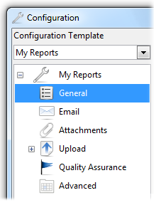
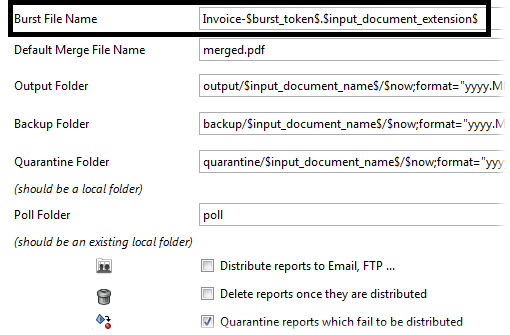
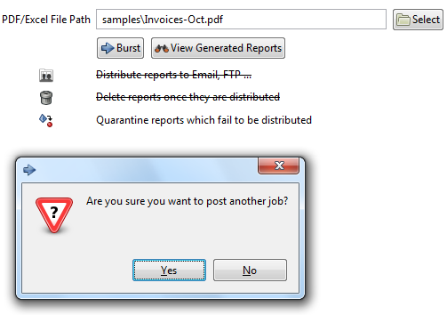
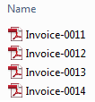
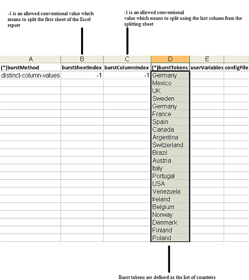
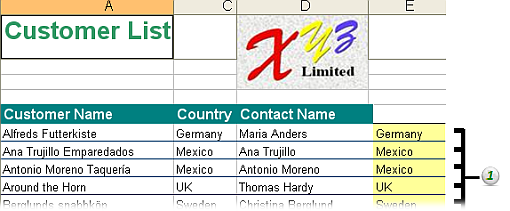

Copyright © 2006-2013 SourceKraft Systems & Consulting Ltd. All rights reserved.
DocumentBursterâ„¢ trademark is property of SourceKraft Systems & Consulting Ltd.
All other marks and trademarks are properties of their respective owners.
- Convention - Path Separator
- I. Introduction
- II. DocumentBurster
- 1. Burst and Merge PDF Reports
- 2. Burst Excel Reports
- 3. Distribute Reports
- 4. Configuration Templates
- 5. Variables
- 6. Automatic Polling for Incoming Reports
- 7. Quality Assurance
- 8. Command Line
- III. DocumentBurster Server
- IV. DocumentBurster Portal
- V. Appendices
- A. DocumentBurster vs. DocumentBurster Server vs. DocumentBurster Portal
- B. How to Do This and That
- C. SharePoint Report Delivery
- D. Performance
- E. Troubleshooting
- E.1. Overview
- E.2. Common Problems
- E.2.1. I Get Only 25 Reports
- E.2.2. Issues Running Basic Features?
- E.2.3. UnsupportedClassVersionError Exception?
- E.2.4. Mess With Multiple Java Installations
- E.2.5. Burst Issue 1
- E.2.6. Burst Issue 2
- E.2.7. Variable Values Are Not Parsed Correctly?
- E.2.8. Windows - DocumentBurster Server Is Failing to Start?
- E.2.9. Windows - DocumentBurster Server Is Not Processing the Web Console Jobs?
- E.2.10. Windows - DocumentBurster Web Console Is Failing to Start?
- E.2.11. Windows Service Stops on Windows Server 2003?
- E.2.12. Email Is Failing?
- E.2.13. Email Still Fails?
- E.2.14. Email SMTP Error 421
- E.2.15. Email SMTP Error 550 5.7.1 Unable to relay
- E.2.16. Few Emails Are Going and Then Email Stops Working
- E.2.17. Email Is Still Failing?
- E.2.18. Upload Issue?
- E.2.19. I messed up with the configuration and now the program is failing. Is it possible to restore the default configuration?
This document uses slash character (/) to display directory and file components of a path.
Microsoft Windows can accept either the backslash (\) or slash (/) characters to separate directory and file components of a path, while the Microsoft convention is to use a backslash (\). Since DocumentBursterâ„¢ is intended to work on multiple operating systems (e.g. Windows, Linux), the convention for this manual is to use the slash character (/) to display the components of a path.
This document will help the reader to get productive with DocumentBursterâ„¢ in order to burst and distribute business reports. We'll also offer tips on sending personalized e-mails, rich formatted HTML e-mails and on getting the maximum performance from your DocumentBursterâ„¢ report delivery system.
As for the system requirements, in most of the situations, DocumentBursterâ„¢ will perform well on any low-end machine which can decently run Windows XP. However, if your enterprise organization is expected to process really huge reports then a more powerful machine will help.
In this user guide, you'll learn how to
- Burst and merge PDF reports
- Burst Microsoft Excel reports
- Distribute reports (e.g. payslips, invoices, etc.) through personalized email messages or through FTP
- Execute and automate DocumentBursterâ„¢ through command line
- Windows Services - install and run DocumentBursterâ„¢ Server as standard Windows Services in order to achieve unattended document delivery
- Schedule reports to be processed and distributed at a specific date and time, to distribute them hourly, daily, weekly, monthly or set up your own frequencies, every other day, third Monday of the month and so on
If you have any questions that aren't answered here, feel free
to
contact us:
<support@pdfburst.com>
If you find a typographical error in this manual, or if you have thought of a way to make this manual better, we would love to hear from you!
If you have a suggestion for improving the documentation, try to be as specific as possible when describing it. If you have found an error, please include the section number and some of the surrounding text so we can find it easily.
Email address:
<support@pdfburst.com>
Now let’s get started.
Table of Contents
DocumentBursterâ„¢ is a powerful solution to schedule, break up (split), merge and distribute reports and can naturally complement any current business intelligence deployment by adding advanced report delivery capabilities.
DocumentBursterâ„¢ can process reports generated with an existing in-house reporting platform or with any of the well known leading report writers including Crystal Reports and Web Intelligence (Business Objects/SAP), IBM Cognos, Oracle Hyperion, Microsoft Reporting Services, Microsoft Access, QlikView, JasperReports, Eclipse BIRT, Pentaho, etc.
DocumentBursterâ„¢ software is currently used successfully together with business applications like Oracle PeopleSoft, SAP ERP, Oracle Applications, Sage Applications, Microsoft Dynamics, JD Edwards, MYOB and QuickBooks accounting software.
The software has three flavors
- DocumentBursterâ„¢ has very good report bursting and report distribution capabilities. DocumentBursterâ„¢ has a desktop based GUI interface which can be used by a single user.
- DocumentBursterâ„¢ Server has all the capabilities of DocumentBursterâ„¢ and some additional advanced features like scheduling, capability to run as windows services and a browser based web interface which can be accessed simultaneously by multiple people.
- DocumentBursterâ„¢ Portal is our DocumentBursterâ„¢ cloud-based managed services solution.
DocumentBursterâ„¢ can process PDF or Excel reports.
- The software can break up reports such as pay slips, invoices or statements for each of your employees, customers or partners.
- DocumentBursterâ„¢ can distribute reports to a wide range of destination types such as Email, FTP, FTPS, SFTP, TFTP, Windows shared drives, Unix Samba servers, WebDAV servers and document management systems.
- The software can publish reports to enterprise portals such as Microsoft Sharepoint Server, SAP NetWeaver, Oracle Portal or IBM WebSphere Portal.
- DocumentBursterâ„¢ can generate custom dynamic email messages based on email templates.
- The software can generate good looking HTML email messages based on HTML email templates.
DocumentBursterâ„¢ Server has all the features of DocumentBursterâ„¢ and some additional advanced capabilities like scheduled report distribution and unattended report delivery in order to achieve the most complex report delivery scenarios.
DocumentBursterâ„¢ Server can be executed like a long-running Windows service in order to perform report distribution with minimum or no user intervention. DocumentBursterâ„¢ Server services can be configured to start when Windows is booted (and run in the background as long as Windows is running), or they can be started manually, when required.
DocumentBursterâ„¢ Server is a fully fledged report distribution solution which can be tailored with advanced features to perfectly meet the most complex report bursting and report distribution requirements.
Following capabilities are all achievable with DocumentBursterâ„¢ Server, either as out of the box features, either through the tailoring of the software
- Distribution Server - The software can be deployed as a central report bursting and report distribution platform which can be simultaneously accessed by multiple people or legacy applications from within your organization.
- Cross browser web interface - DocumentBursterâ„¢ Server has a web based interface available for IE, Firefox, Chrome, Safari and Opera.
- Unattended report distribution - DocumentBursterâ„¢ Server can be configured to run like standard Windows services in order to automatically burst and deliver the reports without human intervention.
- Easy to integrate - DocumentBursterâ„¢ Server can be easily integrated with existing CRM and ERP kind of applications.
- Scheduling - Using DocumentBursterâ„¢ Server it is possible to define simple or complex schedules for executing nightly, weekly or monthly report bursting and report distribution jobs.
- Parallel report delivery - DocumentBursterâ„¢ Server has support for parallel report distribution which allows achieving a high throughput of reports which can be distributed in a short period of time.
- Process any report format - Out of the box DocumentBursterâ„¢ Server can burst and distribute PDF and Excel reports. If required, the software can be tailored to merge, burst and distribute any report format in addition to the already supported PDF and Excel report types.
- Organize, store and index the distributed reports - DocumentBursterâ„¢ Server can be customized to support advanced storing, indexing and searching capabilities for the distributed reports.
- Custom deployment model - DocumentBursterâ„¢ Server can be deployed as a standalone server, or it can be deployed on various application servers such as Weblogic, Websphere, JBoss etc.

DocumentBursterâ„¢ Portal is our DocumentBursterâ„¢ cloud-based managed services solution.
DocumentBursterâ„¢ Portal allows our customers to focus on their business, instead of their report building, report generation, document distribution or how to build a mechanism to accept customer payments online. DocumentBursterâ„¢ Portal is a cloud-hosted web software which can be used to generate and send personalized documents to customers, manage and track documents sent to customers and to (optionally) accept payments online from your customers.
Here is how you could manage customer documents (invoices) using DocumentBursterâ„¢ Portal
The sections in Part II present how to configure DocumentBursterâ„¢ in order to burst and merge reports, distribute reports through personalized messages, automate report processing through report polling and through the command line interface or how to check the status of the processed reports through auditing and tracing.
Chapter 1, Burst and Merge PDF Reports
Chapter 2, Burst Excel Reports
Chapter 3, Distribute Reports
Chapter 4, Configuration Templates
Chapter 5, Variables
Chapter 6, Automatic Polling for Incoming Reports
Chapter 7, Quality Assurance
Chapter 8, Command Line
Table of Contents
- 1. Burst and Merge PDF Reports
- 2. Burst Excel Reports
- 3. Distribute Reports
- 4. Configuration Templates
- 5. Variables
- 6. Automatic Polling for Incoming Reports
- 7. Quality Assurance
- 8. Command Line
DocumentBursterâ„¢ is splitting the reports with the help of burst tokens. A burst token can be anything which is uniquely identifying the document to be extracted such as the invoice ID, customer number or the email address where the document should be distributed.
A burst token is simply any string that is delimited by curly brackets, { and }. The burst tokens must be inserted into the report pages before feeding the PDF report to DocumentBursterâ„¢ for processing. DocumentBursterâ„¢ screens the document for burst tokens, and whenever it finds a new/different burst token it breaks the document.
An example of such token might be
{alfreda.waldback@northridgehealth.org}.
If a page from the report needs to be extracted in a separate
document then
DocumentBursterâ„¢
will be
informed about this by using
burst tokens.
Please take a look at
Payslips.pdf
report which is available in
samples
folder. Bursting this report will generate three output files
alfreda.waldback@northridgehealth.org,
clyde.grew@northridgehealth.org
and
kyle.butford@northridgehealth.org
- for the three distinct employees which are found
in the input
document.
In DocumentBursterâ„¢ main window select , ,

After bursting is finished, in the
output
folder, following
new files will be created
Following general steps should be followed when bursting a report using DocumentBursterâ„¢ .
Procedure 1.1. Steps to Follow When Bursting a Report
Identify the appropriate burst token for the type of report which is being burst. A burst token can be anything which is uniquely identifying the document to be extracted such as the invoice ID, customer number or the email address where the document should be distributed.
Modify the input report to include the curly brackets, { and }, around the previously identified burst token.
Optionally (usually the default configuration is enough), configure DocumentBursterâ„¢ to better meet your bursting needs.
Burst the report and check the output files.
The previous steps will be exemplified when bursting the existing
samples/Invoices-Oct.pdf.
Identify the appropriate burst token.
Since we are bursting an invoice report, the burst token is identified as being Invoice number. Invoice number is uniquely identifying each separate invoice.
Modify the input report to include the curly brackets, { and }, around the previously identified burst token (invoice number).
The report generation software should properly fill the burst tokens into the pages of the reports. Please check
samples/Invoices-Oct.pdfto see how it was modified to include the curly brackets, { and }, around invoice number/burst token report field.
Configure DocumentBursterâ„¢ to generate custom output burst file names.
By default DocumentBursterâ„¢ is generating the output file names using the $burst_token$.$input_document_extension$ configuration. For example, for the previous burst token/invoice number {0011}, the generated file name will be
0011.pdf.The requirement is to customize the output file names to be similar with
Invoice-0011.pdf,for the previous burst token/invoice number {0011}.In DocumentBursterâ„¢ main window select , ,
Change the value of the Burst File Name configuration to be Invoice-$burst_token$.$input_document_extension$
Please see Section 1.3, “Configuration� for detailed description of DocumentBurster™ configurations.
Burst the report and check the output files.
In DocumentBursterâ„¢ main window select , ,
After bursting is finished, in the
outputfolder, following new files will be created
Important
Depending on the business requirements, the report generation software should properly fill the burst tokens into the pages of the reports.
Note
Use a white font color for the burst tokens (or curly brackets, { and }) so that the visual appearance and the layout of the report will not be affected.
Note
Out of the box DocumentBursterâ„¢ supports bursting of PDF and Microsoft Excel reports. If there is a need to burst other report formats such as Word reports, Open Office reports, Microsoft PowerPoint presentations (or any other document type) than DocumentBursterâ„¢ software can be tailored to achieve the bursting and distribution of such report types.
Sometimes, prior to bursting, it might be required to merge few reports together and burst the merged result; or you might as well just want to merge few reports or documents.
DocumentBursterâ„¢ can merge reports through both the command line interface and through the GUI.
In DocumentBursterâ„¢ main window select , ,

- By default the reports are merged in the selection order. The merge order can be changed using Up and Down button commands.
- Merged File Name
- Name of the merged file. Default value is
merged.pdf - Burst Merged File - If checked, the generated merged file will be also split.
- View Generated Reports - Allow browsing of burst/merged reports.
Following properties can be configured in DocumentBursterâ„¢ configuration screen.
Distribute reports to Email, FTP ... - If strikeout, the software will not distribute the burst reports.
Delete reports once they are distributed - If strikeout, the software will not delete the reports once they are distributed.
Quarantine reports which fail to be distributed - If strikeout, the software will not quarantine the reports which fail to be distributed.
Note
Select multiple files - Using Ctrl key + left mouse click it is possible to select multiple files at once.
Note
Out of the box DocumentBursterâ„¢ can merge PDF reports. If there is a need to merge any other report format (including Word, Excel and any other document type) than DocumentBursterâ„¢ can be customized to process any report type.
Following settings can be configured in regards with merging and bursting of the reports in DocumentBursterâ„¢ .
In DocumentBursterâ„¢ main window select , ,

Burst File Name – Name for the generated files. Default value is $burst_token$.$input_document_extension$.
For example, if the token is {clyde.grew@northridgehealth.org} then file name will be
clyde.grew@northridgehealth.org.pdf.Default Merge File Name – Name for the merged file. It can be overridden for each individual merge job. Default value is
merged.pdf.Output Folder – Used to specify the folder where to place the generated files. Default value is output/$input_document_name$/$now; format="yyyy.MM.dd_HH.mm.ss"$ .
Backup Folder – Used to specify the folder where to backup the input files. Default value is backup/$input_document_name$/$now; format="yyyy.MM.dd_HH.mm.ss"$ .
Quarantine Folder – Used to specify the folder where to quarantine the files which fail to be distributed. It should be a local folder and the default value is quarantine/$input_document_name$/$now; format="yyyy.MM.dd_HH.mm.ss"$ .
Poll Folder – Used to specify the folder to be polled for incoming reports. It should be an existing local folder and the default value is poll.
Distribute reports to Email, FTP ... - If checked, the generated reports will be distributed as part of the bursting process, otherwise no. Default value is unchecked.
Delete reports once they are distributed - If checked, the generated reports will be deleted from the disk once they are distributed, otherwise no. Default value is unchecked.
Quarantine reports which fail to be distributed - If checked, the reports which fail to be distributed will be saved to the quarantine folder, otherwise no. Default value is checked.
Note
$burst_token$, $input_document_extension$, $input_document_name$ and $now; format="yyyy.MM.dd_HH.mm.ss"$ are variables and will be replaced at run-time with the value of the token used to burst the report, the extension of the input file, the name of the input file and the current date, formatted. For more details about variables please read Chapter 5, Variables
Following advanced settings can be further configured in order to allow greater control over how DocumentBursterâ„¢ works.
Note
In most of the situations the default values will get the job done without the need to change any configuration here.
In DocumentBursterâ„¢ main window select , ,
- Start Delimiter (Burst Token), End Delimiter (Burst Token) – Start and end delimiters used to parse the burst tokens. Default values are { and } characters.
- Number of User Variables - The number of user variables which DocumentBursterâ„¢ will recognize and parse. Default value is 10.
- Number of Parallel Distribution Jobs - The number of parallel jobs which DocumentBursterâ„¢ will use when distributing the reports. Default value is 1.
- Delay Each Distribution By - The number of seconds which DocumentBursterâ„¢ will wait between each report distribution. For instance this configuration can be used to delay each email distribution by one second. Default value is 0 (seconds).
- Reuse Last Token Found in Previous Pages (when not available in the current page) - Configuration which should be enabled when the burst token is provided only on the first (master) page of the report to be extracted and not on all the subsequent pages. Default value is unchecked (which means that, out of the box, DocumentBursterâ„¢ expects the burst token to be found on each and every page of the report to be extracted).
- Allow email addresses with local domain name and no TLD
(e.g. documentburster@sharepoint, admin@mailserver1)
- By default
DocumentBursterâ„¢
will validate all the email addresses to be in the format
string@otherstring.ext.
Sometimes (while testing locally) it might be required to distribute emails to non standard (local) email addresses (e.g. documentburster@localhost )
Default value is unchecked .
DocumentBursterâ„¢ can burst and split reports which are generated for the following versions of Microsoft Excel spreadsheet application
- Excel 2010 (version 14) included in Office 2010
- Excel 2007 (version 12) included in Office 2007
- Excel 2003 (version 11) included in Office 2003
- Excel 2002 (version 10) included with Office XP
- Excel 2000 (version 9.0) included with Office 2000
- Excel 97 (version 8.0) included with Office 97
Although it does complex report processing, DocumentBursterâ„¢ doesn't require Microsoft Excel application to be installed on the machine where DocumentBursterâ„¢ is deployed. Even more, being a cross platform software, DocumentBursterâ„¢ can process Excel reports on a Windows or on any UNIX/Linux machine. A common installation scenario is to have DocumentBursterâ„¢ deployed on a separate dedicated server machine which is responsible for doing asynchronous batch report bursting and scheduled report distribution.
In order to achieve more business scenarios, DocumentBursterâ„¢ supports two different ways of bursting Excel reports
- Burst by Distinct Sheets
- Burst by Distinct Column Values
Depending on each specific business situation, one or the other of the two distinct bursting methods will be more appropriate. Following paragraphs will give details about each of the supported bursting methods.
When bursting Excel reports using this method, DocumentBursterâ„¢ will generate a separate output file for each Excel sheet which is found in the input report.
The best way to describe this bursting method is by looking at
samples/Payslips-Distinct-Sheets.xls
sample report. This report is provided with
DocumentBursterâ„¢
and contains monthly income data for three fictional employees. The
data
for each employee is found on a separate sheet and the name of
the sheet is the employee's email
address.
The input report has the following three distinct sheets cgrew@northridgehealth.org, kbutford@northridgehealth.org and awaldback@northridgehealth.org which, after bursting, will generate the following three distinct files
Using email addresses as sheet names for the input report can help when distributing the generated output files by email (if the respective email addresses would actually be valid and existing email addresses). For more details about distributing the generated output reports by email please check Chapter 3, Distribute Reports .
This bursting method is straightforward and there is not much more to discuss about it. Following paragraph will present a more complex report bursting method which can generate a separate output file for each distinct value found in a specified column from a specified sheet.
Note
By default, DocumentBursterâ„¢ will burst Excel reports by distinct sheets and the names of the sheets will be used as burst tokens.
Note
Beside payslips, DocumentBursterâ„¢ can be configured to break up and distribute any other Excel report types such as invoices, statements, purchase orders, commissions reports or dunning letters.
When bursting Excel reports using this method, DocumentBursterâ„¢ will generate a separate output file for each distinct value found in a specified column from a specified sheet.
Please check the existing sample report
samples/Customers-Distinct-Column-Values.xls
which can
be found in
samples
folder.
Customers-Distinct-Column-Values.xls
report contains a list of customers from various
countries
which, after
bursting,
DocumentBursterâ„¢
will generate a
separate file with each file containing
the customers
for
the
relevant country.

Each configured burst token will generate a different output file.
The
last sheet
of the input report
samples/Customers-Distinct-Column-Values.xls
is called
burst
and
contains the metadata required for bursting the
report.
Important - burst Sheet
In order to burst by distinct column values it is mandatory that the last sheet of the input report will be called burst and this sheet should contain the proper (meta)information required for bursting the report.
If DocumentBurster™ doesn't find the last sheet to have the name burst then it will fallback to process the report by using the previous alternative bursting method described in Section 2.2, “Burst by Distinct Sheets� .
Important - Replace All Excel Formulas With the Corresponding Calculated Values
In order to burst by distinct column values all the formulas (if the report contains formulas) should be pre-calculated before the report is sent for processing to DocumentBursterâ„¢ .
Microsoft Excel documentation - Replace a formula with its result
Following screenshot shows how the (meta)information burst sheet should look.
(*)burstMethod : (distinct-sheets|distinct-column-values) - Required information which specifies the bursting method to be used. Following two valid values are possible
- distinct-column-values – should be used when splitting the report by the distinct values found in a column
- distinct-sheets – should be used when splitting the input report by each distinct sheet
Default value is distinct-column-values.
(*)burstMethod is an information which is mandatory to be provided.
burstSheetIndex - 0 (zero) based index of the sheet which needs to be split. For example, if it is required to split the first sheet then the index should be 0, if second sheet should be split then the index should be 1 and so on.
-1 is an allowed conventional value which means to split the first sheet of the Excel report.
Default value is -1.
burstColumnIndex - 0 (zero) based index of the column to be used when splitting the report. If it is required to split using the first column then burstColumnIndex should be defined as 0, if second column is required for splitting then burstColumnIndex should be defined as 1 and so on.
Usually the splitting column will be the last column from the splitting sheet. -1 is an allowed conventional value which means to split using the last column from the splitting sheet.
Default value is -1.
(*)burstTokens - required information which specifies the list of distinct burst tokens for which DocumentBursterâ„¢ should generate a separate output file. For example, in the above screenshot the list of burst tokens contains the set of distinct countries for which DocumentBursterâ„¢ should generate an output file.
(*)burstTokens is an information which is mandatory to be provided.
userVariables - information to be provided in case there is a need to specify custom user variables for each distinct burst token. For more details on how to define user variables when bursting Excel reports please read Chapter 5, Variables .
configFile
- information to be provided in case there is a need to process
distinct Excel report types by using
a different set of program
configurations. By default, if no custom
configFile
is
provided,
DocumentBursterâ„¢
is processing all Excel reports using the default configuration
file
./config/burst/settings.xml.
This should be fine in most situations,
however there are cases when
different reports will require different sets
of configurations.
For
more details
about how
to process Excel
reports
using a custom
configuration file
please
read
Section 4.2, “Process Excel Reports Using a Custom
Configuration File
�
.
Next screenshot shows how the report
samples/Customers-Distinct-Column-Values.xls
was configured in order to be processed by
DocumentBursterâ„¢
.
For reasons of better visualization, the last column
which is only
used in this sample report for the purpose of report
bursting, it is
highlighted
with the yellow color. It is not mandatory
that the
bursting
column should have a specific color. Usually
the burst column
will be a hidden Excel
column which will not
be
visible
to the normal
report users but
only defined for the purpose of
bursting the report.
(1) - DocumentBursterâ„¢ will keep the "empty rows" in the output reports. This is useful for keeping in the output files various headers and/or footers which a report might have.
(2) - Last column contains the values from which DocumentBursterâ„¢ will decide which Excel row goes to which output file. It can have any color and will usually be a hidden Excel column.
In real life most Excel reports will have a header and/or a footer (e.g. the company name/logo, the name of the report etc.) which is statically defined and which should be copied ad litteram to each of the output files.
(1) - DocumentBurster™ keeps the �empty rows� in the output reports. This is used to copy the static report headers or footers (and any other static row) to the output reports.
Following general steps should be followed when bursting an Excel report by distinct column values.
Procedure 2.1. Steps to Follow When Bursting an Excel Report by Distinct Column Values
Identify the appropriate burst token for the type of report which is being burst. A burst token can be anything which is uniquely identifying the document to be extracted such as the invoice ID, customer number or the email address where the document should be distributed.
Configure and prepare the input Excel report to include the (meta)information (the burst sheet) required for bursting the document.
This step is required only if the report contains Excel formulas. Before the report is sent for processing to DocumentBursterâ„¢ all the formulas should be pre-calculated and replaced with the corresponding values.
See Microsoft Excel documentation - Replace a formula with its result for more details.
Burst the report and check the output files.
The previous steps will be exemplified when bursting the same
samples/Customers-Distinct-Column-Values.xls.
Identify the appropriate burst token.
The report to be burst contains a list of customers and each customer has a country of origin. The requirement is to break the report by country and each output file should contain the customers from the relevant country.
The burst token is identified as being the Country column.
Configure and prepare the input Excel report to include the (meta)information required for bursting the document.
In order to burst by distinct column values it is mandatory that the last sheet of the input report will be called burst and this sheet should contain the proper (meta)information required for bursting the report.
The last column from the splitting sheet is yellow (for better visualization) and is added only for the purpose of bursting the report. The bursting column doesn't need to have a specific color and will usually be an invisible Excel column (so that the normal report user will not see it).
(1) - Extra column which is added for the purpose of splitting the report. It can be defined as a hidden Excel column so that it will be invisible to the normal report users.
Calculate and replace Excel formulas with the corresponding values
Customers-Distinct-Column-Values.xlssample report doesn't contain any Excel formula, so there is nothing to do for this report in regards with that.Burst the report and check the output files.
Burst
samples/Customers-Distinct-Column-Values.xlsreport and check the list of output files, one Excel file for each country with each output file containing the list of customers from the specific country.
Your partners might need their reports to be sent through various distribution channels. Most of them will prefer email but others will rather use FTP. Some customers might have their own automated software systems to further process the reports and might expect the files to be placed in a specified remote location. Others might have more strict security related requirements and will prefer the FTPS protocol. In some scenarios the generated reports should be uploaded through an enterprise portal like Microsoft SharePoint .
DocumentBursterâ„¢ offers a broad range of destination types like email, local files, FTP, FTPs, SFTP and TFTP, Windows shared drives, UNIX Samba servers and WebDAV servers. WebDAV protocol is used to distribute the reports to enterprise web portals such as Microsoft SharePoint , Oracle Portal or SAP NetWeaver .
In order to distribute the reports, the following configuration needs to be checked.
In DocumentBursterâ„¢ main window select , ,
Distribute reports to Email, FTP ... - If checked, the generated reports will be distributed as part of the bursting process, otherwise no. Default value is unchecked.
DocumentBursterâ„¢ can distribute reports using a Microsoft Exchange email server or using any other SMTP compliant email server. For testing purposes it's possible to configure DocumentBursterâ„¢ to send emails through free (SMTP) email providers like Hotmail , Yahoo! Mail , Gmail , etc.
In order to distribute reports by email, the email server connection settings should be properly configured.
In DocumentBursterâ„¢ main window select , , ,

The email configuration is straightforward. The most important settings are the host, the user name, the password and the port. If an email server with SSL or TLS support (e.g. Gmail , etc.) is used then the appropriate checkboxes need to be selected.
Send Test Email can be used to test that the provided email settings are correct.
DocumentBursterâ„¢ works when configured with correct Microsoft Exchange SMTP server connection settings. DocumentBursterâ„¢ communicates with the Microsoft Exchange email server through SMTP similar with how the Microsoft Outlook email client software does. Check the Microsoft Exchange SMTP connection settings configured in any working Microsoft Outlook software installation. Providing the same (Outlook) SMTP settings to DocumentBursterâ„¢ it's an easy way to get DocumentBursterâ„¢ to send emails through yours organization Microsoft Exchange server.
Microsoft Office 365
DocumentBursterâ„¢ can be configured to send emails through the cloud Microsoft Office 365 service. Please refer to the following documentation and see the Microsoft Office 365 SMTP settings to be configured with DocumentBursterâ„¢
For testing few reports DocumentBursterâ„¢ can be configured to send emails through any (free) SMTP cloud email service provider.
No matter which of these free email services are used, you must be aware of the "rate limit" (the limit for sending emails) established by your email account provider (i.e. Microsoft , Gmail , Yahoo ).
Gmail can be configured for testing few reports. If you are interested to test DocumentBursterâ„¢ with Gmail , please read this Gmail documentation.
Yahoo! Mail , Hotmail and other big email providers have POP3 support and can be configured with DocumentBursterâ„¢ . Please read the POP3 support documentation of the specific email provider which you have the intention to use.
Note
If required, a network or IT administrator from your organization should be able to give further help in configuring the email server settings.
Important
If there is a firewall or anti-virus software which is enabled in-between DocumentBursterâ„¢ and the email server, in such case, the protecting software might need to be configured and allow DocumentBursterâ„¢ to send emails as a good and trustable citizen.
If required, using variables, the email connection settings can be dynamically filled at run-time when the reports are being distributed.
For example, your organization might have few departments (e.g. human resources/payroll, financial/accounting, travel department, etc.) and each department will need to distribute their own set of reports. Payslip reports (which are being distributed by the human resources/payroll department) should be sent using the payroll@yourcompany.com email account, invoices should be sent using finance@yourcompany.com and so on.
Variables, which are described with more details in Chapter 5, Variables , can be used to achieve such a requirement. Instead of hard-coding the sender email account as being payroll@yourcompany.com or finance@yourcompany.com, using variables, it is possible to dynamically fill the email connection details when the reports are being distributed (at that time the sender is known).

When sending the reports, the dynamic variables $var0$, $var1, etc. will be appropriately evaluated with the configuration settings for either payroll@yourcompany.com or finance@yourcompany.com. For more details about Variables please check Chapter 5, Variables .
The simplest email distribution scenario is when sending each of the generated reports to one different recipient.
By default the To address is configured with the value of the $burst_token$ variable. If the burst tokens are of type email address, for example by using tokens such as {clyde.grew@northridgehealth.org}, DocumentBursterâ„¢ will send the output report to the corresponding email address, in this case the clyde.grew@northridgehealth.org email address.
This is how the existing sample report
samples/Payslips.pdf
is configured to work.

The
burst token
is
clyde.grew@northridgehealth.org
so the output file name will be
clyde.grew@northridgehealth.org.pdf
and
will be emailed as an attachment to the
clyde.grew@northridgehealth.org
email address.
Another scenario is to distribute each output report to a list of people (or groups of people). It is also easy to configure DocumentBursterâ„¢ to CC and BCC the generated reports.

In addition, it is possible to use dynamic variables when configuring the email destinations for the output reports. For example, it is possible to configure DocumentBursterâ„¢ to distribute emails TO $var0$, CC to $var1$ and BCC to $var2$.
At run-time the variables will be expanded with values from the report which is being distributed, for example the variable values might be evaluated to
- $var0$ (TO)- emma.w@company.com;george.c@company.com
- $var1$ (CC)- accounting@company.com
- and $var2$ (BCC)- finance@northridgehealth.com.
Important
Multiple email addresses should be separated by either semicolon (;) or comma (,).
DocumentBursterâ„¢ supports sending of personalized email messages which have the corresponding burst report attached to the email.
In DocumentBursterâ„¢ main window select , , ,

Using variables, the subject and the text of the email messages can be dynamically configured and customized for each individual recipient.
Example - In the previous screenshot, when each individual report is being distributed, $var0$, $var1$ and $var2$ variables will be replaced with values fetched from the burst report such as John, July and Michelle.
Following is the message which is sent when the variables are expanded with the values John, July and Michelle
Hi John,
Attached you can find the invoice for the
month of July.
Thank you,
Michelle
Note
In order to avoid message retyping, using the Save Template and Load Template buttons, it is possible to save/load email message templates from/to external text files.
DocumentBursterâ„¢ can be configured to send rich HTML formatted email messages in order to add color, images, headings, bulleted lists, emphasized text, underline key points, or to make some of the words bold.
Configuration
Select the HTML email checkbox and define the HTML message with valid HTML code containing the message which needs to be distributed.
Provide Plain Text Message Alternative
When you configure to send HTML emails it is a good practice to provide an alternative plain text message for HTML unaware email clients (such as text-based email clients).
Personalize HTML Messages Using Variables
It is possible to use variables to personalize the content of the HTML emails for each individual recipient. For more details about variables please read Chapter 5, Variables
Image Paths
DocumentBursterâ„¢
resolves all image paths used in the HTML code starting from
./templates
parent directory.
For instance, the image
logo.png
is defined in the
invoice.html
having the relative path
src="html-basic-example/images/logo.png",
starting from the
./templates
parent directory.
DocumentBursterâ„¢
comes with a sample
HTML email template located in
templates/html-basic-example
folder.
The sample template is called
invoice.html
and contains a good looking invoice to demonstrate the
capabilities
of HTML emails.
The sample HTML email template has a complex enough layout for giving an idea of what things can be achieved when sending HTML formatted emails (i.e. colors, images, bold text, etc.).
This is how the sample HTML invoice looks on Microsoft Outlook email client.
Mobile, WebMail and Desktop Trends
We tracked nearly 1 billion emails every month throughout 2015.
In the second half of 2015, opens made on mobile devices surged, going from 49% in June to 54% in November—a 10% increase. This matches trends we’ve seen in prior years where consumers are more likely to rely on portable devices. Webmail and desktop opens have also steadily declined throughout 2015, each dropping 13% since January.
https://litmus.com/blog/top-10-most-popular-email-clients-of-2015
Responsive Email Templates
Designing responsive HTML emails can be hard. DocumentBursterâ„¢ makes it easy.
DocumentBursterâ„¢ comes with Foundation for Emails which is a simple framework to quickly create responsive HTML emails that work on any device and any client.
http://foundation.zurb.com/emails.html
There are four responsive email templates available in
./templates/html-mobile-responsive-emails/templates/base
All four email templates have been tested across 40+ email clients and devices.
1. Basic - View Demo - https://litmus.com/pub/85a1b19
This template is perfect for sending a basic but nice looking responsive email.
2. Hero - View Demo - https://litmus.com/pub/6d34a4c
Want to include a snazzy hero image in your responsive email? This template is for you!
3. Sidebar - View Demo - https://litmus.com/checklist/public/f6f3c9d
This template includes a sidebar area for a list of links, perfect for linking to additional content.

4. Sidebar Hero - View Demo - https://litmus.com/checklist/public/c00b7d3
Want a sidebar and a hero image? Let's go crazy! This template combines the Sidebar and Hero templates.
Resources
- Foundation for Emails Documentation - http://foundation.zurb.com/emails.html
- Online tool to easily write your your email in markdown which is then converted automatically into a fully responsive email - http://cakedown.alexandredeschamps.ca
Out of the box DocumentBursterâ„¢ attaches to each email message the file which is extracted for the corresponding burst token. This is the most common scenario and it is supported using the default program configuration.
Sometimes a different situation might be required
- Send emails without any attachment
- Send emails with two or more files attached (separate files or a single archive/zip file containing all the files together)
- Distribute other document formats (e.g. Word, XML, etc.) beside the PDF and Excel formats which are supported out of the box
Use case example
The requirement is to send electronic invoices via email. The invoice is formed by a PDF which is the graphical form of the invoice, and an XML file which contains the details of the invoice.
By some countries law, it is required to send both files in order to consider this as a valid invoice.
The above requirement can be achieved by defining both files as an attachment for the output emails
- The extracted PDF invoice
- The corresponding XML file
Furthermore, the files can be archived and sent together as a single zip file.
In DocumentBursterâ„¢ main window select , ,

- By default the software is attaching $extracted_file_path$.
- Attachments can be added, removed and edited using the buttons with the corresponding names Add,Remove (or Clear to remove all) and Edit.
- Variables can be used when defining attachments. For more details about variables please read Chapter 5, Variables .
- The files are attached in the selection order. The order can be changed using Up and Down button commands.
Archive Attachments
- Archive all attachments together - If selected, DocumentBursterâ„¢ will archive (zip) all the attachments together. If configured to distribute reports, DocumentBursterâ„¢ will deliver to the relevant recipients the archived (zip) file containing all the corresponding files. Default value is unchecked.
- Archive File Name – Name for the archive file. Default value is reports-$burst_token$.zip.
DocumentBursterâ„¢ software can upload business reports through most of the existing network protocols including FTP, Windows File Share, FTPS, SFTP/SCP/SSH, TFTP, HTTP, HTTPs and WebDAV. WebDAV is an extension of HTTP protocol and DocumentBursterâ„¢ can be used to upload reports to any web server which has WebDAV support.
DocumentBursterâ„¢ closely integrates with cURL , a Swiss-army knife for doing data transfer. Through cURL, DocumentBursterâ„¢ can distribute reports via HTTP or FTP with or without authentication, it works over SSL, and it works without interaction. Actually cURL (and thus DocumentBursterâ„¢ ) supports distributing files and data to a various range of common Internet protocols, currently including HTTP, HTTPS, FTP, FTPS, SCP, SFTP, TFTP, LDAP, LDAPS, DICT, TELNET, FILE, IMAP, POP3, SMTP and RTSP.
cURL - http://curl.haxx.se/
Cross platform
cURL is portable and works on many platforms, including Windows, Linux, Mac OS X, MS-DOS and more.
On Windows, DocumentBursterâ„¢ package distribution is bundling together a recent version of cURL. So, if your organization is running DocumentBursterâ„¢ under Windows, there is nothing more to download or install in regards with cURL.
For other UNIX like systems, such as Linux and Mac OS X, the appropriate cURL binaries distribution should be properly downloaded and installed. In addition, the cURL groovy scripts which are bundled together with DocumentBursterâ„¢ are written for Windows usage and should support small adjustments to be made ready for usage under Linux/UNIX.
Further cURL resources
cURL is a tool for getting or sending files using URL syntax. The URL syntax is protocol-dependent. Along with the URL for the required protocol, cURL can take some additional options in the command line.
For complete cURL documentation you can follow
In DocumentBursterâ„¢ main window select , , ,
Command - Command which DocumentBursterâ„¢ will execute in order to upload each of the output reports. It is possible to use variables in order to dynamically generate the command at run-time.
The example provided with the software is a typical cURL command for uploading reports using the FTP protocol.
- --ftp-create-dirs - (FTP/SFTP) When an FTP or SFTP URL/operation uses a path that doesn't currently exist on the server, the standard behavior is to fail. Using this option, the software will instead attempt to create missing directories.
- -T, --upload-file - This transfers the specified local file to the remote host.
- $extracted_file_path$ - Variable which is expanded with the path to the last extracted file.
- -u, --user <user:password> - Specify the user name and password to use for server authentication. User variables can be used in order to dynamically configure user and password.
- example.com - Replace this with the FTP host where the reports should be uploaded. User variables can be used in order to dynamically configure the FTP host.
- /reports/ - Replace this with the folder on the server where the reports should be uploaded. User variables can be used in order to dynamically configure the remote folder.
In DocumentBursterâ„¢ main window select , , ,

Command - Command which DocumentBursterâ„¢ will execute in order to upload each of the output reports. It is possible to use variables in order to dynamically generate the command at run-time.
The example provided with the software is a typical cURL command for uploading reports to file share.
- file:// - File URI scheme
- %20 - ASCII character code for space (URL Encoding).
- $extracted_file_path$ - Variable which is expanded with the path to the last extracted file.
In DocumentBursterâ„¢ main window select , , ,

Command - Command which DocumentBursterâ„¢ will execute in order to upload each of the output reports. It is possible to use variables in order to dynamically generate the command at run-time.
The example provided with the software is a typical cURL command for uploading reports to a server which has FTPS support.
- --ssl
- Try to use SSL/TLS for the connection.
Reverts to a non-secure
connection if the server doesn't support
SSL/TLS. See also
--ftp-ssl-controland--ssl-reqdfor different levels of encryption required. - $extracted_file_path$ - Variable which is expanded with the path to the last extracted file.
In DocumentBursterâ„¢ main window select , , ,
Command - Command which DocumentBursterâ„¢ will execute in order to upload each of the output reports. It is possible to use variables in order to dynamically generate the command at run-time.
The example provided with the software is a typical cURL command for uploading reports to a server which has SFTP support.
- sftp:// - Specifies that SFTP protocol should be used.
- $extracted_file_path$ - Variable which is expanded with the path to the last extracted file.
In DocumentBursterâ„¢ main window select , , ,
Command - Command which DocumentBursterâ„¢ will execute in order to upload each of the output reports. It is possible to use variables in order to dynamically generate the command at run-time.
The example provided with the software is a typical cURL command for uploading reports to a web server. The web server should have HTTP upload enabled, otherwise uploads will not be allowed.
Microsoft SharePoint is a common report distribution use case. The command to upload to a SharePoint portal should be similar with the provided SharePoint example.
People use DocumentBursterâ„¢ to email invoices, payslips or other financial reports to customers and employees. In addition to an email your customers can also get an SMS message like:
Dear
Customer Name
,
Just wanted to let you know that we've sent the June invoice by
email to
customer@emailaddress.com
.
Thank You for your business!
Your Name
,
Your Company Name
With an average SMS open rate of 99% you can see why sending SMS messages to your customers is useful.
DocumentBursterâ„¢ can be configured to send SMS text messages through Twilio.
Twilio (pronounced TWILL-e-o) is a cloud communications (IaaS) company based in San Francisco, California. Twilio allows sending text messages using its services. Twilio's services are billed based on usage.
Configuration
First step is to register an account with Twilio. It's fast and free to get started. You can use your existing Twilio account if you already have one. Follow this link to register your new Twilio account.
https://www.twilio.com/try-twilio
Twilio requires two credentials for sending SMS messages. The Account SID , which acts as a username, and the Auth Token which acts as a password. Follow this link to learn more about your Twilio Account SID and Auth Token .
What is the Auth Token, and how can I change it?
DocumentBursterâ„¢ supports sending of personalized SMS text messages to your customers.
In DocumentBursterâ„¢ main window select , , ,
Using variables the From Number , To Number and the text of the SMS messages can be customized for each individual recipient.
From Number – Phone number used for sending the SMS messages.
This number should be a Twilio SMS-enabled phone number . Follow this link for more details
To Number – Phone number where the SMS message will be sent. Using a variable you'll personalize (provide) the mobile number for each of your recipients (customers).
Text – The SMS text message to be sent. Using variables you'll send a personalized text message for each of your recipients (customers).
If required, DocumentBursterâ„¢ has support to use a different set of configuration settings for each separate report type. For example, using this capability, it is possible to use a different email subject, text or burst file name for invoices report type and a different email subject, text or burst file name when processing payslips report type.
By default, if no custom configuration file is provided,
DocumentBursterâ„¢
will process all the reports using the default configuration settings
which are saved
in
./config/burst/settings.xml
configuration file. This should be fine in most of the situations,
however there
are
cases
when it is required to process a different
report
type using
its
own set of
configuration settings.
Use case example
The requirement is to burst and email to customers several different types of financial documents, specifically
- invoices
- statements
- dunning letters
Each of the above report types should be delivered to customers using an email subject and text which is specific to the report type which is being distributed (i.e. invoices, statements or dunning letters).
The requirement can be achieved by defining
- invoices
email subject and text
in a configuration file such as
./config/burst/invoices.xml - statements
email subject and text in a different
./config/burst/statements.xml -
and
dunning letters
email subject and text in its own configuration file
./config/burst/dunning-letters.xml.
DocumentBursterâ„¢ will process and email each different report type by using its own distinct set of configuration settings.
While bursting a PDF report, DocumentBursterâ„¢ checks the first page of the report for a custom defined configuration file by looking for a pattern like
<config>path-to-the-custom-settings-file.xml</config>
For example, in order to process
invoices
report
using a custom configuration file, the first page of the input
invoices.pdf
report should contain
something similar with
<config>./config/burst/invoices.xml</config>
Note
The same result can be achieved by using the shorter (while being less expressive) pattern
<c>path-to-the-custom-settings.xml</c>,
for example <c>./config/burst/invoices.xml</c>
While bursting an Excel report,
DocumentBursterâ„¢
checks for a custom configuration file defined
in
configFile
column from
burst
metadata sheet. If no custom configuration
file is found then
DocumentBursterâ„¢
will burst the report
using the default
./config/burst/settings.xml
configuration file.
Following is how an Excel reports should be configured in order to achieve the above (i.e. invoices, statements and dunning letters) requirement.
In
burst
sheet,
invoices.xls
Excel report should have
the custom
configFile
defined like that
In
burst
sheet,
statements.xls
Excel report should have
the custom
configFile
defined like that

In
burst
sheet,
dunning-letters.xls
Excel report should have
the custom
configFile
defined like that

In DocumentBursterâ„¢ main window select ,

- Add - Create a new configuration template.
- Edit - Modify an existing configuration template.
- Remove - Delete an existing configuration template.
Each configuration template is saved in a different configuration
file.
For example,
Invoices
configuration template might be saved in a
./config/burst/invoices.xml
file
while
Statements
configuration template might be saved in a
./config/burst/statements.xml
file.
Copy Initial Values From - When creating a new configuration template it is required to provide the path to an existing and valid configuration file from which the initial configuration values will be copied. Once the new configuration template is created you might modify only the few settings which should be different between configuration templates (e.g. email subject, email message, etc.). Most of the other settings will usually remain the same (e.g. email server connection settings) between different configuration templates.
Default Value
-
./config/burst/default/defaults.xml
Once the configuration templates are created they will become available to be used throughout the DocumentBursterâ„¢ GUI.

DocumentBursterâ„¢ variables are pieces of information from the input report, evaluated and processed individually for each output report.
Variables can be used to define dynamic configurations as well as data to be included in the delivery of documents. For example, using an email message template together with variables it is possible to define a personalized email subject/message for each individual recipient.
Variables can be used to define custom dynamic values for the following configurations
- Burst File Name
- Output Folder
- Backup Folder
- Quarantine Folder
- Upload (FTP, File Share, etc.) commands and URLs can be dynamically generated
- Email To, CC and BCC fields can be dynamically generated
- Email subject and message text can be personalized using variables
- Email connection settings can be customized using variables. From Name, From Email Address, Host, User Name, User Password and Port settings are all configurable using variables.
Using variables, the values of the above configurations can be dynamically populated at run-time with information coming from the report which is being burst.
While it is possible to define static values for the output folders, it is not advisable. In order to avoid the output reports to get overridden from one burst session to another, with the help of variables, it is better to define dynamic time-stamp based output folder configurations.
Following are few situations in which variables will help
- The same report is being burst at different times. Bursting the same report to the same statically defined output folders will override the files generated during previous burst sessions.
- Few different reports are using the same burst tokens (for example the email address of the same client). Having a common output folder will result in getting the generated reports to be overridden between different burst sessions. This is happening because the same burst token is found in different input reports.
Using variables, with unique time-stamp based values generated at run-time, it is possible to overcome the above described problems by defining unique output folder names per each different burst session.
Output Folder, Backup Folder and Quarantine Folder configurations are all defined using the same pattern $input_document_name$/$now; format="yyyy.MM.dd_HH.mm.ss"$
When bursting the input sample document
Payslips.pdf,
by default, the output files are being generated in a folder
similar
with
Payslips.pdf/2010.10.28_19.13.13
-
$input_document_name$/$now;
format="yyyy.MM.dd_HH.mm.ss"$.

Built-In vs. User-Defined Variables
DocumentBursterâ„¢ has two types of variables
Built-In Variables
User-Defined Variables
Built-in variables can be the name of the report to burst, the date (in various formats) when the bursting is happening or the current burst token.
Following built-in variables are available to be used within DocumentBursterâ„¢
- $input_document_name$ - the file name of the input report
- $input_document_extension$ - the file extension of the input report. It will be pdf for PDF input reports, xls for Excel versions prior to 2007 and xlsx for Excel 2007 and Excel 2010.
- $burst_token$ - the burst token which is used for bursting the current file
- $burst_index$ - the index of the burst file. For example, a file which will be burst fourth will have the value 4
- $output_folder$ - the output folder where the last file was extracted
- $extracted_file_path$ - the path to the last extracted file
- $now; format="yyyy.MM.dd_HH.mm.ss"$
- the current date and time displayed in the specified format.
Custom
date formats
can be specified also, for example it is possible
to
display the full date/time or display
one or a
combination of year,
month, week, day, hour, minute,
second.
yyyy.MM.dd_HH.mm.ss
is the format which is provided with the software.
Note
Windows doesn't allow to use the character : when defining folder and file names.
- $now_default_date$ - shortcut to the default date format in the computer's locale settings. U.S. Locale example would be Jun 30, 2009
- $now_short_date$ - shortcut to the short date format in the computer's locale settings. U.S. Locale example would be 6/30/09
- $now_medium_date$ - shortcut to the medium date format in the computer's locale settings. U.S. Locale example would be Jun 30, 2009
- $now_long_date$ - shortcut to the long date format in the computer's locale settings. U.S. Locale example would be June 30, 2009
- $now_full_date$ - shortcut to the full date format in the computer's locale settings. U.S. Locale example would be Tuesday, June 30, 2009
Using built-in variables it is possible to build an advanced foldering and archiving solution for the output reports.
Following different foldering options are possible. Combinations of the following are also possible
Generate one different output folder per each input report
Generate one different output folder per each different burst token
Date related options - generate one output folder per year, financial quarter, month, week in month, day in week and up to the level of hours, minutes and seconds.
DocumentBursterâ„¢ is coming with the following default settings
Burst File Name - $burst_token$.$input_document_extension$
When bursting the
samples/Payslips.pdf
report following three
files are being generated. The three email
addresses are the burst tokens and
pdf
is the input
document extension.

User defined variables can be any text from the report which is being burst or distributed.
User variables might be used for sending emails with a personalized subject and a personalized message text or for generating dynamic file names and folder names for the output burst reports.
DocumentBursterâ„¢ has support for up to 10 (ten) user defined variables $var0$, $var1$, $var2$, $var3$, $var4$, $var5$, $var6$, $var7$, $var8$ and $var9$. While the variable names are not impressive they are for sure handy to use.
The values for the user defined variables are being populated with text content from the report which is being burst. Usually the variables will have different values for each different burst token (or for each different recipient).
In order to populate the user defined variables with values, DocumentBursterâ„¢ engine is looking inside the report for patterns like the following
<0> any text which should be assigned as a value to the first variable </0> or
<1> any text which should be assigned as a value to the second variable </1>
DocumentBursterâ„¢ engine supports up to 10 (ten) different variables, so the last variable will look like <9> any text which should be assigned as a value to the 10th variable </9>.
User defined variables can be used to dynamically generate any of the following Burst File Name, Output Folder, Backup Folder, Quarantine Folder, Upload(FTP, File Share, etc.) commands and URLs, Email To, CC and BCC fields, Email Subject, Email Message Text, From Name, From Email Address, Host, User Name, User Password and Email Server Port.
With the default settings, DocumentBursterâ„¢ is generating the output file names using the following configuration
Burst File Name
-
$burst_token$.$input_document_extension$
where
$burst_token$
is the system built-in variable used to burst
the separate files and
$input_document_extension$
is the input file
extension (i.e.
pdf, xls or xlsx).
Requirement
For example, a requirement might be to generate the output file names (Burst File Name) using the following pattern
Customer name-Invoice number-Invoice date.pdf
The requirement can be achieved with the help of user defined
variables.
Please check
samples/Invoices-Oct.pdf
sample report to see that
Invoice number
field is configured as burst token and
Customer name
and
Invoice date
fields are mapped to
$var1$
and
$var0$
user variables.

Burst File Name
will be defined as
$var1$-$burst_token$-$var0$.pdf

$burst token$, $var0$ and $var1$ variables will be populated at run-time with values fetched from each separate report.
- Variables are fetched at run-time from each separate invoice. DocumentBursterâ„¢ is looking for <N>value</N> patterns in each invoice, where N is from 0 to 9.
-
In the above example the name of the generated file will be
Alpha Electric-0011-Oct 10, 2011.pdf
Using the previous configuration, bursting
samples/Invoices-Oct.pdf
will generate
the following four distinct files
Note
Use a white font color for the start and the end tags of the variables, (e.g. <0> and </0>) so that the visual appearance and the layout of the report will not be affected.
Important
Before going to production, it is advisable to practice the use of variables on few sample reports. This is to avoid any unpleasant situation of sending wrong data to clients or customers.
While the concept and the usage for the user defined variables are the same with the PDF reports, Excel user defined variables are defined like the following example
- If required, Excel user-defined variables can be declared in the userVariables column from burst metadata sheet
- Similarly with the PDF variables, Excel user-defined variables are enclosed in between <0>value</0>,<1>value</1> and so on.
- The value for var0 user variable (associated with Germany burst token) is Alfreds Futterkiste and the value for var1 is Berlin. The values for the USA burst token are the ones which are presented in the screenshot.
DocumentBursterâ„¢ can poll a configurable folder and automatically pick for processing all the reports which are dropped to this folder.
This functionality is useful when integrating with an external legacy system which can be configured to generate the reports to the polled folder, thus obtaining an automated system to generate, burst and distribute the reports.
In DocumentBursterâ„¢ main window select , ,


Start Polling - Start watching the selected folder for incoming reports. Once the polling is started, DocumentBursterâ„¢ will automatically process all the reports which are dropped to this folder.
End Polling - Stop watching/polling the folder for incoming reports.
View Generated Reports - Browse the generated reports.
Note
The polling GUI presented in this chapter is not available in
DocumentBursterâ„¢
Server.
DocumentBursterâ„¢
Server
will automatically start to check (poll) the
server/poll
folder once it is started.
For more details about the additional features of DocumentBurster™ Server software please read Chapter 9, DocumentBurster Server .
When dealing with reports and financial documents it is important to have a good quality assurance mechanism.
I'm concerned with sending misdirected mass email.
This is a legitimate concern which people might have before deciding to implement an automated report delivery system. DocumentBursterâ„¢'s quality assurance mechanism is the tool intended to address exactly this concern, thus greatly reducing the risk and increasing the confidence of doing mass report distribution.
Before going "live" quality assurance should be used for testing that everything is configured as it should be.
DocumentBursterâ„¢ integrates a Test Email Server which sits in the system tray and does not deliver the received messages. The received messages can be quickly viewed and inspected. Imagine you're just about to email 1000 invoices to your customers. You'll want to test your messages before emailing? Email Tester will help you do just that.
The emails that are routed to the Email Tester will include the document(s) as a PDF attachment and the body of the email messages will be the same which the actual recipients are going to receive. Once you are comfortable using DocumentBursterâ„¢ you can go "live" and distribute the reports to the actual recipients.
In DocumentBursterâ„¢ main window select , , ,
This is the screen used to configure and start the Test Email Server. Only From Name and From Email Address settings are required to be configured. The rest of the settings should remain with the default values.
Once the Test Email Server is configured/started the connection can be tested using the Send Test Email button.
In DocumentBursterâ„¢ main window select , ,
One of the following test modes can be selected:
- Test all the burst tokens which are found in the input report (emails and upload commands will only be logged) – DocumentBurster™ will test all the burst tokens which are found in the report. If DocumentBurster™ is configured to distribute reports then one email (or upload) log file will be generated for each different recipient (burst token). The email/upload log files will contain all the relevant information which is required to validate that the software is configured properly.
- Test the following burst tokens – DocumentBurster™ will test the (comma separated) list of burst tokens which are specified by the user. If DocumentBurster™ is configured to distribute reports then the corresponding emails will be sent to the test email address and will also be logged to separate log files. If configured as such then DocumentBurster™ will execute any relevant upload command(s) and will log the commands in the appropriate files. The email/upload log files will contain all the relevant information which is required to validate that the software is configured properly.
- Test 2(configurable) random burst tokens – DocumentBurster™ will test 2(configurable) random burst tokens. If DocumentBurster™ is configured to distribute reports then the corresponding emails will be sent to the test email address and will also be logged to separate log files. If configured as such then DocumentBurster™ will execute any relevant upload command(s) and will log the commands in the appropriate files. The email/upload log files will contain all the relevant information which is required to validate that the software is configured properly.
Once the test is finished all the generated emails will be available for inspection in the Test Email Server which is started and waits in the Windows (bottom right) system tray.
Note
While email distribution is the most common distribution method, DocumentBursterâ„¢'s quality assurance mechanism can be used to validate any upload/distribution configuration which the software currently supports (e.g. FTP, file share, etc.)
It is crucial for the software to properly distribute all the documents to the correct destinations. However sometimes, because of various reasons, the distribution of the documents might fail. This might happen because the email server connection details are not correct or because the server itself is down or maybe the SSL settings are not accurate.
DocumentBursterâ„¢ has support for logging all activities and for tracing back the reports which fail to be distributed.
In DocumentBursterâ„¢ main window select , ,

(1) - View/Clear Log and Quarantine Files - Buttons to view/clear INFO, ERROR or WARN log files. View/Clear Quarantine Files are the buttons to view/clear the reports which are quarantined.
(2) - Current Running Jobs - List with the jobs which are currently executing
(3) - Progress and Status Bars - At the bottom of the screen there are a progress bar which shows the running progress and a status bar which displays possible problems. Green color means that there are no failed reports while the red color means that at least one report failed to be distributed and was quarantined.
By default, in order to keep the log files simple and clear, the program is logging the errors and the minimum necessary number of informative events.
If required,
DocumentBursterâ„¢
can be configured to generate detailed log files.
To do this please edit the file
log4j.xml
and make the following change
<!-- Log level value="debug" will make DocumentBurster more verbose -->
<level value="info" />
Do the bold change
<!-- Log level value="debug" will make DocumentBurster more verbose -->
<level value="debug"/>
Save the configuration file and run the program again. Now DocumentBursterâ„¢ will generate detailed log files which can be used for tracing of possible problems.
DocumentBursterâ„¢ can be configured to send an email whenever a
problem is happening.
To do this, please edit the file
log4j.xml
and un-comment
the following line
<!-- <appender-ref ref="mailAppender" /> -->Â
In addition, it is required to give all the correct email connection details in the mailAppender section.
DocumentBursterâ„¢ can be configured to quarantine (save) the documents which fail to be delivered to a configurable folder. The failed documents should be reviewed at a later point in time in order to take a decision (either to distribute again or to do something else).
In DocumentBursterâ„¢ main window select , ,
Quarantine Folder – Used to specify the folder where to quarantine the files which fail to be distributed. It should be a local folder and the default value is quarantine/$input_document_name$/$now; format="yyyy.MM.dd_HH.mm.ss"$ .
Quarantine reports which fail to be distributed - If checked, the reports which fail to be distributed will be saved to the quarantine folder, otherwise no.
By default DocumentBursterâ„¢ software is stopping the report distribution when an error is happening. DocumentBursterâ„¢ software will wait for the root cause of the problem to be fixed before triggering again the same report. The reason for this default behavior is that usually the problems are happening because of incorrect (or inconsistent) data and that all of these problems should be promptly fixed otherwise, when ignoring incorrect data (or misconfiguration), bigger problems will probably happen later.
Having said that, there are few legitimate situations in which the continuation of the report distribution might be the preferred choice. For example, you might be looking at distributing reports to 5000 customers out of which 3 customers have an incorrect email address in the database. Maybe the customer data was collected during a long period of time (and by many people) so few data problems are expected. In such a case you will not be willing to halt all the distribution and instead you will need to distribute the reports to all the correct addresses and, in the same time, to get a list with the incorrect email addresses which needs to be fixed afterwards.
In DocumentBursterâ„¢ main window select , , ,

If any recipient distribution fails...
- Fail job - The report distribution is stopped when an error is happening. The offending error is reported through the log file. This is the default configuration.
- Continue report distribution for the remaining recipients - If any recipient distribution fails then the distribution continues for the remaining recipients. The offending errors are reported through the log file.
DocumentBursterâ„¢ has a command line interface and can be integrated and executed from existing legacy software systems. All the features of the program are available through command line.
Important
Before running DocumentBursterâ„¢ in command line, the software should be properly configured.
For more details about configuring DocumentBurster™ please read Section 1.3, “Configuration�

A. Windows
Following is the syntax for running the program
documentburster.bat –f <pathOfTheFileToBurst> [-c
<pathOfTheConfigurationFileToUse>]
- –f <pathOfTheFileToBurst> - Mandatory argument. Path to the PDF or Excel report to burst.
- -c <pathOfTheConfigurationFileToUse> - Optional argument. Path to the configuration file to be used.
For example the command
documentburster.bat –f samples/Payslips.pdf
will burst the
Payslips.pdf
file located in the
samples
folder using the default
config/burst/settings.xml
configuration file.
B. Unix/Linux
Following is the syntax for running the shell script
./documentburster.sh –f <pathOfTheFileToBurst> [-c
<pathOfTheConfigurationFileToUse>]
For example the command
./documentburster.sh –f samples/Payslips.pdf
will burst the
Payslips.pdf
file located in the
samples
folder using the default
config/burst/settings.xml
configuration file.
A. Windows
Following is the syntax for running the program
documentburster.bat –m
<"pathOfTheFileToMerge1|...|pathOfTheFileToMergeN"> [-o
<mergedFileName>] [-b]
–m <"pathOfTheFileToMerge1|...|pathOfTheFileToMergeN"> - Mandatory argument. List of the PDF reports to merge (separated by the | character).
-o <mergedFileName> - Optional argument. The name of the output merged file. If it is not specified then the
merged.pdffile name is assumed by default.-b - Optional argument. Optional switch which specifies that the resulted merged file should be also burst.
For example the command
documentburster.bat –m
"samples/Invoices-Oct.pdf|samples/Invoices-Nov.pdf|samples/Invoices-Dec.pdf"
-o Invoices-1st-Quarter.pdf -b
will first concatenate the files
Invoices-Oct.pdf,
Invoices-Nov.pdf
and
Invoices-Dec.pdf
(-m) into a file called
Invoices-1st-Quarter.pdf
(-o) and will burst the merged
file (-b).
B. Unix/Linux
Following is the syntax for running the program
./documentburster.sh –m
<"pathOfTheFileToMerge1|...|pathOfTheFileToMergeN"> [-o
<mergedFileName>] [-b]
A. Windows
Following is the syntax for running the program
documentburster.bat –p <pathOfTheFolderToPoll>
For example the command
documentburster.bat –p poll
will start polling the folder
poll
for incoming
reports to process.
B. Unix/Linux
Following is the syntax for running the shell script
./documentburster.sh –p <pathOfTheFolderToPoll>
For example the command
./documentburster.sh –p poll
will start polling the folder
poll
for incoming
reports to process.
A. Windows
1. Following is the syntax for testing all the burst tokens
documentburster.bat –f <pathOfTheFileToBurst> [-c
<pathOfTheConfigurationFileToUse>] -ta
For example the command
documentburster.bat –f samples/Payslips.pdf -ta
will test all the burst tokens which are found in the
Payslips.pdf
file located in the
samples
folder using the default
config/burst/settings.xml
configuration file.
2. Following is the syntax for testing a comma separated list of tokens
documentburster.bat –f <pathOfTheFileToBurst> [-c
<pathOfTheConfigurationFileToUse>] -tl
<"token1,token2,...tokenN">
For example the command
documentburster.bat –f samples/Payslips.pdf -tl
"clyde.grew@northridgehealth.org,alfreda.waldback@northridgehealth.org"
will test the tokens
clyde.grew@northridgehealth.org
and
alfreda.waldback@northridgehealth.org
which are found in the
Payslips.pdf
file located in the
samples
folder using the default
config/burst/settings.xml
configuration file.
3. Following is the syntax for testing random tokens
documentburster.bat –f <pathOfTheFileToBurst> [-c
<pathOfTheConfigurationFileToUse>] -tr <N>
For example the command
documentburster.bat –f samples/Payslips.pdf -tr 2
will test two random tokens which are found in the
Payslips.pdf
file located in the
samples
folder using the default
config/burst/settings.xml
configuration file.
B. Unix/Linux
1. Following is the syntax for testing all the burst tokens
./documentburster.sh –f <pathOfTheFileToBurst> [-c
<pathOfTheConfigurationFileToUse>] -ta
2. Following is the syntax for testing a comma separated list of tokens
./documentburster.sh –f <pathOfTheFileToBurst> [-c
<pathOfTheConfigurationFileToUse>] -tl
<"token1,token2,...tokenN">
3. Following is the syntax for testing random tokens
./documentburster.sh –f <pathOfTheFileToBurst> [-c
<pathOfTheConfigurationFileToUse>] -tr <N>
Part III presents how to configure and run DocumentBursterâ„¢ Server in order to benefit from additional powerful capabilities like scheduled report distribution, capability to run as windows services and a browser based web interface which can be accessed simultaneously by multiple people.
DocumentBursterâ„¢ Server can be deployed as a central system to provide report bursting and report distribution services to multiple people or software applications from your organization.
DocumentBursterâ„¢ Server has all the capabilities of DocumentBursterâ„¢ and some additional advanced features like
- Server Architecture in order to support multiple people or applications from within your organization
- Web Based User Interface which is compatible with all the major browsers - Internet Explorer, Firefox, Chrome, Opera and Safari
- Windows Services support in order to achieve unattended report bursting and report distribution
- Job Monitoring Console to see the currently executing jobs and trace the status for previously submitted jobs
- Scheduling support which allows to define nightly, monthly or custom schedules for the report bursting and report distribution jobs
In addition, if required, DocumentBursterâ„¢ Server is a powerful platform which has the foundation to add and tailor other additional report distribution features which an organization might need, for example
- Burst, split and merge any report format (out of the box DocumentBursterâ„¢ can process PDF and Excel reports)
- Full indexing and search capabilities for the reports which are being burst and distributed. In simple words this feature allows to quickly find a report which was distributed one year ago - even if your company is distributing a big number of reports each month.
DocumentBursterâ„¢ Server software has the same prerequisites like DocumentBursterâ„¢ . If required, please read the DocumentBurster in 5 Minutes to install the prerequisites for running the software.
For evaluation purposes, DocumentBursterâ„¢ Server can be downloaded from this link - https://s3.amazonaws.com/documentburster/newest/documentburster-server.zip .
Extract the zip archive to a drive like
C:/
Once the zip file is extracted, a new directory will be available
(e.g. -
C:/DocumentBurster-5.2.8)
which will contain the
following two sub-directories
server- contains the binaries and the scripts for starting and stopping the report bursting serverweb-console- binaries and scripts for the DocumentBursterâ„¢ Web Console
1. Configuration
DocumentBursterâ„¢
Server
is configured using the same GUI
interface (
DocumentBurster.exe
) like
DocumentBursterâ„¢
.
DocumentBursterâ„¢
configuration was described in detail in
Section 1.3, “Configuration�
.
2. Starting and Stopping
-
Starting
- once configured, the server can be started using
server/startServer.bat(Windows) orserver/startServer.sh(Linux) scripts. -
Stopping
-
server/shutServer.bat(Windows) orserver/shutServer.sh(Linux) scripts should be used to stop the server.
3. Automatic Polling
Once started the server is automatically checking for new
reports to
process
in
the
server/poll
directory. Any report which is dropped to
server/poll
folder is automatically picked up and processed by
DocumentBursterâ„¢
Server.
1. Dependency
Web Console depends on Server - When starting, the web console is connecting to the server so, it is mandatory to have the server component started first.
2. Starting and Stopping
-
Starting
- once the
server
is started, the
web console
can be
started using
web-console/startConsole.bat(Windows) orweb-console/startConsole.sh(Linux) scripts. -
Stopping
-
web-console/shutConsole.bat(Windows) orweb-console/shutConsole.sh(Linux) scripts should be used to stop the console.
Once started DocumentBursterâ„¢ Web Console application can be accessed by typing following URL in your browser
http://machine-name:8080/burst for example
http://localhost:8080/burst
Important
Sometimes, due to wrong configuration, the web console might fail to start properly. The solution to this problem can be found by reading Section E.2.10, “ Windows - DocumentBurster Web Console Is Failing to Start? � troubleshooting entry.
DocumentBursterâ„¢ Server is coming with a web based interface which can be accessed from any major web browser (e.g. Mozilla Firefox, Internet Explorer, Google Chrome, etc.). The web interface can be used for triggering new ad hoc jobs, scheduling jobs for later execution or for viewing the status, history and detailed logs of the previously submitted jobs.
The web console needs the server to be started, so make sure it is
so.
After the server is started,
in the folder where the software was
extracted,
please execute
web-console/startConsole
script to get the
console started. After few seconds the application
can be accessed
by typing
following URL in the browser
http://machine-name:8080/burst
for example
http://localhost:8080/burst
Users need to authenticate for using DocumentBursterâ„¢ Web Console.
When the application it's initially installed it comes with a default burst username and burst password.

Users can be added, removed or updated through the web-console/config/users.properties user configuration file. Each user should be
configured on a new line using the syntax
user=password,ROLE_USER
ROLE_USER is a constant which all the users will have.
1. Ad hoc/Immediate Jobs - Reports can be immediately burst and distributed through the → menu entry.
2. Scheduled Jobs
can be submitted through the
→
menu entry. Uploaded report files are placed in
the
server/input-files/scheduled
folder being scheduled for execution at a later time.
DocumentBursterâ„¢ Web Console can be used to submit new jobs for immediate execution, to schedule jobs for later execution, to view the currently running jobs or to check the status, history and the logs of the previously submitted jobs.
Following are some screenshots from the application.

Burst reports - uploaded reports are picked up and processed by the server

Schedule report bursting jobs - schedule documents for distribution at a later time

Jobs page
DocumentBursterâ„¢ Server job executions page - view status and history of distribution jobs
Detailed information for the selected job
- (1) - Status of the job
- (2) - Logging details for the failed jobs
Being a server application, DocumentBursterâ„¢ can be configured to run in the background as long as the operating system is running.
Following paragraphs will detail how to configure DocumentBursterâ„¢ to run automatically when the system is starting. The screenshots are taken from Windows 7 and the same can be similarly achieved on any other Windows distribution.
DocumentBursterâ„¢ software can start when the Microsoft Windows operating systems is booted, either
- By configuring DocumentBursterâ„¢ to run as standard Windows services, or
- By scheduling DocumentBursterâ„¢ to run When the computer starts
The above options are two different ways for solving similar requirements. You are free to choose the option which is best fitting your needs.
Following is how to configure each option in detail.
Both the server and the web console components can be separately configured to be executed as Windows services.
The server is the mandatory component which is doing the report processing while the web console will be started as a web GUI interface for posting the reports to the server.
DocumentBursterâ„¢ Web Console depends on the server to be started and, as a result, the DocumentBursterâ„¢ Web Console Windows service will be automatically configured to depend on the DocumentBursterâ„¢ Server Windows service.
The server will be configured as a service using the
server/service.bat
script.
Procedure 9.1. Configure DocumentBurster™ Server as a Windows service
In the command prompt, using the
cdcommand, switch to the folder where the server is installed. For example, assuming DocumentBursterâ„¢ is extracted in the folderC:/DocumentBursterthen
Execute the command
service.bat install
DocumentBurster™ Server Windows service is now installed and it is properly listed in → →

By default the service is stopped and it is configured as having the Startup Type 'Manual'.
DocumentBursterâ„¢
Web Console
will be configured as a Windows service
by following the same steps
which were previously presented
for the
DocumentBursterâ„¢
Server
component.
The web console will be configured as a service using the
web-console/console/bin/service.bat
script.
DocumentBursterâ„¢ Web Console Windows service will be automatically configured to depend on the previously installed DocumentBursterâ„¢ Server Windows service.

Important
On Windows Server 2008 R2 it is required to execute the
service.bat install
DOS commands with elevated or administrative privileges.
To run
these commands, you can use the
Run as administrator
command
- Click the button
-
In the Search box, type
command prompt -
In the list of results, right-click
Command Prompt, and then clickRun as administrator. If you are prompted for an administrator password or confirmation, type the password or provide confirmation.
Note
If required, both
DocumentBursterâ„¢
Server
and
DocumentBursterâ„¢
Web Console
Windows services can be individually uninstalled from the system
by
executing the command
service.bat remove
on their corresponding
script file.
Before uninstalling, please make sure that the services are properly stopped.
If you find too heavy running DocumentBursterâ„¢ as Windows Services then Windows Scheduled Tasks is another option for getting DocumentBursterâ„¢ to automatically start when Windows is starting.
Procedure 9.2. Set up DocumentBurster™ Server using Windows Scheduling
The screenshots are showing how to schedule
server/startServer.bat
script in order to automatically
start the
server
component.
In Windows 7 select , , ,
Click
Next
Click
Next
Click
NextClick
Nextand thenFinishto get the task scheduled.
Done.
server/startServer.batscript was scheduled to start when Windows is starting.
Note
The above screenshots show how to schedule the
server/startServer.bat
script in order to automatically
start the
server
component. The same can be done for
web-console/startConsole.bat
script in order to automatically start the
DocumentBursterâ„¢
Web Console.
Important
DocumentBursterâ„¢
Web Console
depends on the server to be started and, as a result,
the
web-console/startConsole.bat
batch file
should be scheduled to start just after the
server/startServer.bat
component had been started.
DocumentBursterâ„¢ Server can handle scheduled report bursting and report distribution jobs. By default the software can handle jobs scheduled for nightly (midnight) execution. If this is what it is required, then it is nothing more to be configured in regards with scheduling. On the other hand, it is possible to customize the scheduling - familiarity with other cron like schedulers will help in understanding better the scheduling mechanism implemented in DocumentBursterâ„¢ . Yearly, monthly, weekly, daily, hourly or any other custom report bursting schedule jobs are all possible to define.
While for executing ad hoc, immediate report bursting jobs,
DocumentBursterâ„¢
Server
is checking the
server/poll
folder, scheduled reports should be placed in the
server/input-files/scheduled
directory.
DocumentBursterâ„¢
will properly trigger the
report bursting and report distribution jobs
to happen at the
correct date and time, depending
on how the scheduling
is configured.
DocumentBursterâ„¢ Server scheduling is configured using cron expressions.
By default the scheduler is configured to run daily, at midnight. In order to change the default (daily) configuration you need to update the cron expression entry at the end of the configuration file
server/config/batch/internal/batch-context.xml
See below sample of the cron (scheduling) entry
<task:scheduled-tasks scheduler="scheduler">
<task:scheduled ref="scheduled" method="run" cron="0 0 0 * * ?" />
</task:scheduled-tasks>
The text cron="0 0 0 * * ?" is the cron expression of particular interest in regards with configuring the scheduling. 0 0 0 * * ? is the encoding to configure the default daily (midnight) schedule. The previous default cron expression can be replaced with any other valid expression, based on the requirements, in order to schedule yearly, monthly, weekly, daily - at different time or hourly report processing jobs. Cron expression documentation is out of the scope of this user guide, more details about how to configure a cron expression can be found at
Important
A DocumentBursterâ„¢ Server restart is required whenever the cron expression configuration is changed.
Part IV presents DocumentBursterâ„¢ Portal which is our cloud-based managed services DocumentBursterâ„¢ solution.
DocumentBursterâ„¢ Portal is our DocumentBursterâ„¢ cloud-based managed services solution.
DocumentBursterâ„¢ Portal allows our customers to focus on their business, instead of their report building, report generation, document distribution or how to build a mechanism to accept customer payments online. DocumentBursterâ„¢ Portal is a cloud-hosted web software which can be used to generate and send personalized documents to customers, manage and track documents sent to customers and to (optionally) accept payments online from your customers.
DocumentBursterâ„¢ Portal is a cloud document platform which can be used for
- Online report and document generation
- Online report/document publishing and distribution
- Accepting customer payments online (optionally)
- Tracking financial documents sent to customers (which customers paid, which customers didn't pay yet, send reminders for overdue payments, etc.)
Use Cases
DocumentBursterâ„¢ is used by people to implement the following
- Web + DocumentBurster = Documents2People
- Web + DocumentBurster = Customer Payment Portal
- Web + DocumentBurster = Invoices2People
- Web + DocumentBurster = Bills2People
- Web + DocumentBurster = PurchaseOrders2People
- Web + DocumentBurster = Statements2People
- Web + DocumentBurster = Payslips2People
- Web + DocumentBurster = SchoolReports2People
- Web + DocumentBurster = Contracts2People
- Web + DocumentBurster = AnyDocument2People
The easiest way to understand how DocumentBursterâ„¢ Portal works is to follow our 1 Minute Walk-Through showing the platform's high level capabilities in action.
You can also take our live Customer Payment Portal demo and understand how DocumentBursterâ„¢ Portal can be used to send documents (i.e. invoices) to customers and manage documents sent to customers.
You can take the demo as
- AdminLoginDemo - Login to manage invoices sent to customers and keep track which customers paid and which didn't pay yet their invoices (use demo/demo for user/password)
- PayInvoiceDemo - Customer which is paying the invoice ( Demo Mode – No Real Money Involved )
All documents are uploaded to DocumentBursterâ„¢ Portal
You login with an administrator password to manage uploaded documents

You can use the DocumentBursterâ„¢ Portal's built-in mechanism to accept customer payments online.

Customers can start paying your invoices in a matter of minutes.
Accepting Online Payments is an optional DocumentBursterâ„¢ Portal feature.
DocumentBursterâ„¢ Portal being a web application it's possible to track documents using Analytics and see who paid, who did not pay, who viewed or who didn't view yet the documents, etc.
For instance, if you need such detailed information about the distributed documents, it's possible to implement a Google Analytics dashboard similar with the following
It's possible to track which documents were viewed and which weren't, which documents were paid and which weren't, the revenue generated, geographic locations from where the documents were viewed and lots of other useful metrics.
Document Analytics is an optional DocumentBursterâ„¢ Portal feature.
Depending on your needs the same DocumentBursterâ„¢ Portal solution can be deployed to manage invoices, bills, purchase orders, statements, payslips, school fees, school grades, school reports or any other document which should be sent to your customers, employees or partners.
The layout (i.e. logo, brand, headers, footers, colors) of the implemented documents will be crafted to match the look and feel you would require.
Don’t hesitate to contact us for any further DocumentBurster™ Portal enquiries you might have.
-
Email:
<support@pdfburst.com> - Contact Us: https://www.pdfburst.com/contact.html
Appendix A, DocumentBurster vs. DocumentBurster Server
 vs. DocumentBurster Portal
Appendix B, How to Do This and That
Appendix C, SharePoint Report Delivery
Appendix D, Performance
Appendix E, Troubleshooting
Table of Contents
- A. DocumentBurster vs. DocumentBurster Server vs. DocumentBurster Portal
- B. How to Do This and That
- C. SharePoint Report Delivery
- D. Performance
- E. Troubleshooting
- E.1. Overview
- E.2. Common Problems
- E.2.1. I Get Only 25 Reports
- E.2.2. Issues Running Basic Features?
- E.2.3. UnsupportedClassVersionError Exception?
- E.2.4. Mess With Multiple Java Installations
- E.2.5. Burst Issue 1
- E.2.6. Burst Issue 2
- E.2.7. Variable Values Are Not Parsed Correctly?
- E.2.8. Windows - DocumentBurster Server Is Failing to Start?
- E.2.9. Windows - DocumentBurster Server Is Not Processing the Web Console Jobs?
- E.2.10. Windows - DocumentBurster Web Console Is Failing to Start?
- E.2.11. Windows Service Stops on Windows Server 2003?
- E.2.12. Email Is Failing?
- E.2.13. Email Still Fails?
- E.2.14. Email SMTP Error 421
- E.2.15. Email SMTP Error 550 5.7.1 Unable to relay
- E.2.16. Few Emails Are Going and Then Email Stops Working
- E.2.17. Email Is Still Failing?
- E.2.18. Upload Issue?
- E.2.19. I messed up with the configuration and now the program is failing. Is it possible to restore the default configuration?
DocumentBursterâ„¢ software has three different flavors
- DocumentBursterâ„¢
- DocumentBursterâ„¢ Server
- DocumentBursterâ„¢ Portal
Which version of the software you will choose depends on your specific needs. This chapter will offer additional details required to make this decision.
DocumentBursterâ„¢ is a normal (desktop) application which a user will configure and use on his or her work computer. This is the version of the software which you (most) probably downloaded and tested initially. DocumentBursterâ„¢ has all the report bursting and report distribution capabilities you would expect including report distribution by email, SMS or web and the capability to upload the reports to remote servers through various protocols.
DocumentBursterâ„¢ is usually purchased by companies where the "end-users" (people) (vs. enterprise ERP/CRM apps) are the main consumers of the application.
DocumentBursterâ„¢ is easier to configure but will require a separate installation/license for each separate user/machine.
DocumentBursterâ„¢ Server has all the bursting features of DocumentBursterâ„¢ and few additional capabilities targeted towards a more 100% hands off automation when integrated in an enterprise environment working alongside other ERP or CRM business applications. DocumentBursterâ„¢ Server is usually deployed on a "central" Windows Server machine and can be simultaneously used by multiple people and/or applications within your organization. For instance five (5) people can use a single central DocumentBursterâ„¢ Server installation through their own web browsers. DocumentBursterâ„¢ Server can be installed/started/executed automatically in the background as Windows Services. DocumentBursterâ„¢ Server has also scheduling capabilities and can automatically "poll" a folder to pick new incoming PDFs which need to be processed.
DocumentBursterâ„¢ Server is usually purchased by companies which need to consume and integrate DocumentBursterâ„¢ within their existing CRM or ERP business applications.
DocumentBursterâ„¢ Server is a little bit more involving to configure but the installation is done only once on a central server.
DocumentBursterâ„¢ Portal is our DocumentBursterâ„¢ cloud-based managed services solution.
DocumentBursterâ„¢ Portal allows our customers to focus on their business, instead of their report building, report generation, document distribution or how to build a mechanism to accept customer payments online. DocumentBursterâ„¢ Portal is a cloud-hosted web software which, for a fee, can be used to generate and send personalized documents to customers, manage and track documents sent to customers and to (optionally) accept payments online from your customers.
There is no software which you will have to install or configure on your computers in order to use DocumentBursterâ„¢ Portal. You will instead get a DocumentBursterâ„¢ Portal user/password account to login and track the distributed documents, check which customers paid and which customers didn't pay yet, send reminders for overdue payments, etc.
You will choose DocumentBursterâ„¢ Portal for any of the following reasons
- You want to generate and publish web documents for your customers, employees, partners or students
- You need an online mechanism to accept and track payments from your customers
- Your company doesn't have much IT resources but you still need an automated system to send documents to customers and (optionally) accept customer payments
- You want to send documents (i.e. invoices, payslips, statements, etc.) to your customers or employees but you don't have yet the documents layout built. In that case we can "code" the documents for you and we can even customize the reports/documents layout to match the look and feel you require (i.e. logo, brand, headers, footers, colors)
- You just want to get everything done without worrying too much about SQL, databases, network, network admins, configuring Microsoft Exchange email server or Twilio SMS, burst tokens, checking the log files, backuping the data, checking user permissions, writing code and programming reports, modifying PDF report layouts, etc.
Don’t hesitate to contact us for any further enquiries you might have
-
Email:
<support@pdfburst.com> - Contact Us: https://www.pdfburst.com/contact.html
Sometimes it might be required to distribute existing reports which are pre-generated and already contain (only) the relevant data for the intended recipient. Such reports don't require any further splitting but only to be distributed, without any modification, to the proper destination. This destination might be email or any other destination type which is currently supported by DocumentBursterâ„¢ (e.g. FTP, SFTP, etc.).
DocumentBursterâ„¢ can be configured to distribute external/existing documents which do not require splitting.
Warning
When distributing external reports DocumentBursterâ„¢ doesn't perform any splitting so you need to make sure that the reports contain (only) the relevant data for the intended recipients.
$extracted_file_path$ is the default configuration. This should be changed with a dynamic value to be filled at run-time (e.g. $var0$ user variable).
$var0$ should be configured to point to the appropriate document path to be distributed for each recipient. The external documents can be in any format, including PDF, Excel, Word, CSV,Txt, Xml or any other report format.
There are two different ways to configure the recipients list and the path to the document(s) to be distributed to each separate recipient.
- Provide the recipients and the document(s) paths in an Excel sheet
- Provide the recipients and the document(s) paths in a PDF report
Note
These are two different ways for achieving the same business requirements. The alternative which is best fitting the needs should be used.
When using Excel for configuration
- Recipients list can be provided using the (*)burstTokens column from the metadata burst sheet
- The paths to the document(s) to be distributed can be provided using user variables, more specifically using the userVariables column from the metadata burst sheet. For example, mapping $var0$ user variable to the path of the document to be distributed, it is possible to distribute a separate report to each distinct recipient/burst token.
Check the existing sample report
samples/Distribute-External-Files.xls
which can
be found in
samples
folder.
Distribute-External-Files.xls
report contains a list of recipients together
with the relevant
report to be distributed to each one of them.

The document paths are dynamically mapped using the $var0$ user variable. In this sample
- clyde.grew@northridgehealth.org
will receive by
email
samples/Invoices-Oct.pdf, - kyle.butford@northridgehealth.org
will get
samples/Invoices-Nov.pdfand - alfreda.waldback@northridgehealth.org
will get
samples/Invoices-Dec.pdf.
Fetch recipients list from other data sources
If required, using Excel, it should be possible to fetch the recipients list and the document(s) paths from other data sources.
Excel has the capability to connect and fetch data from various data sources including SQL Server, Oracle, Microsoft Access, MySQL and most of the existing database types. Using Excel it is also possible to fetch data from existing Xml, CSV, Txt or other Excel reports.
For more details on how to use Excel to connect to an external data source, please consult the official Microsoft Excel documentation.
As an alternative to Excel, it is also possible to provide the recipients and the document(s) paths in a PDF report. This might be convenient when there is already in place an automated PDF based reporting system which can generate the recipients list.
The PDF report should contain one distinct page for each intended recipient and each page should contain all the details required for the specific recipient (including the path(s) to the document(s) to be distributed).
Check the existing sample report
samples/Distribute-External-Files.pdf
which can
be found in
samples
folder.
Distribute-External-Files.pdf
report has three pages, each page containing the path to the
document to be
distributed to the corresponding recipient
- clyde.grew@northridgehealth.org ,
- kyle.butford@northridgehealth.org and
- alfreda.waldback@northridgehealth.org
Using DocumentBursterâ„¢ it is possible to implement conditional report delivery . While bursting the reports, DocumentBursterâ„¢ can check and can distribute only those reports which fail to meet a specified user defined condition and can be configured to skip the delivery for the reports which meet the condition.
Use case example
DocumentBursterâ„¢ can be deployed and can be easily configured to act as a management by exception reporting system which will alert the management team only for the cases where the minimum performance levels are not met.
For example, the management of your organization might require for getting each morning only the reports for the sales with very low profit margins or for the transactions with deviations from the approved discounts.
Configuration
By default, if configured to distribute reports, DocumentBursterâ„¢ will deliver to the relevant recipients all reports which are being generated during the bursting process. The default behavior can be changed, and DocumentBursterâ„¢ can be configured to skip the report distribution, by placing a text which has the pattern similar with <skip>true</skip> in each of the output documents which should be skipped for report distribution.
Note
The same result can be achieved by using the shorter (while being less expressive) pattern <s>true</s>.
If configured to distribute reports, DocumentBursterâ„¢ will distribute to the relevant recipients all the reports which are being generated during the bursting process and for which DocumentBursterâ„¢ :
- Is not able to find any explicit positive skip instruction like <skip>true</skip>(or <s>true</s>) which have the meaning to skip the distribution for the current report
- Finds an explicit negative skip instruction like <skip>false</skip>(or <s>false</s>) which have the meaning to distribute the current report
- Doesn't find any (positive or negative) skip instruction
Important
Depending on the requirements, the report writer software should properly fill the appropriate <skip>true/false</skip> tags into the reports which needs to be burst and distributed. Usually the value (true/false) from within the <skip>true/false</skip> instruction tags will be calculated by a formula defined in the report writer engine and having a business meaning such as:
- Very low profit margins
- Discounts higher than the maximum approved ones
- Low inventory levels
- Production runs with very high scrap rates
- Any other formula which makes business sense for your organization
This sample script can be used to achieve complex conditional report delivery scenarios.
DocumentBursterâ„¢
's
built-in capabilities (skip instruction) can be used to achieve
many
conditional distribution
scenarios while this sample script
(scripts/burst/samples/skip_current_file_distribution_if.groovy)
should be used for achieving the remaining and more complex
situations which cannot be easily implemented using the built-in
skip
instruction approach.
This sample script can be used to achieve conditional report distribution in situations similar with the following
- The condition to skip the distribution cannot be achieved using a skip report formula (e.g. skip the delivery for files which are bigger than 20MB)
- The condition to skip the distribution is too complex and it might be more convenient to describe this condition in scripting than with a skip report formula
- The input report cannot be modified (for whatever reason) to accommodate any skip instruction
skip_current_file_distribution_if.groovy
approach
is described in detail
in
skip_current_file_distribution_if.groovy
from
DocumentBursterâ„¢
- Advanced
Report Delivery
Scenarios.
DocumentBursterâ„¢ can be used to deliver reports to Microsoft SharePoint portals.
Microsoft SharePoint is a good document management system which has the following document related capabilities:
- Store, organize, and locate documents
- Ensure the consistency of documents
- Manage metadata for documents
- Help protect documents from unauthorized access or use
- Ensure consistent business processes (workflows) for how documents are handled
DocumentBursterâ„¢ is usually used together with SharePoint in order to solve the following business situations:
- For connecting two important systems of any organization, the reporting system and the document management system (i.e. SharePoint).
- For publishing relevant reports to be accessible by clients, employees, etc. through the web. Think to the situation where you have few hundreds or thousands of customers or dealers and, with a single click, you can make the relevant individual reports to be available to each one of them on the portal.
Following paragraphs will describe how to configure DocumentBursterâ„¢ in order to burst and deliver reports to Microsoft SharePoint portal.
The simplest way to upload reports to SharePoint is through DocumentBurster™ 's email distribution capability. DocumentBurster™ email configuration is described in Section 3.3, “Distribute Reports by Email� .
From DocumentBursterâ„¢ 's point of view, email configuration is exactly the same regardless if the email destinations are normal email addresses or are SharePoint enabled email addresses.
Microsoft SharePoint should be properly configured (by a SharePoint administrator) in order to accept inbound emails.
It is out of the scope of this manual to give full details about SharePoint inbound email configuration. The official Microsoft SharePoint documentation together with the many existing SharePoint books are the places to look for complete documentation.
Instead, this manual will give hints and will further refer to the official documentation for the topics which are of interest when it comes to SharePoint and DocumentBursterâ„¢ integration.
Following are the main configuration points in regards with SharePoint inbound email:
- Install and configure the SMTP service
- Configure incoming e-mail settings
- Configure incoming e-mail on SharePoint sites
The inbound email configuration should be similar for both SharePoint 2007 and SharePoint 2010 and for detailed configuration the official SharePoint documentation should be consulted.
Following are some help resources for SharePoint 2007 inbound e-mail configuration:
Following are few SharePoint 2010 help resources related with inbound email configuration:
This example shows how to distribute reports to a WSS3.0 - SharePoint 2007 portal which is installed on Windows Server 2003.
While bursting
samples/Payslips.pdf
report,
DocumentBursterâ„¢
will generate three output reports
alfreda.waldback@northridgehealth.org.pdf,clyde.grew@northridgehealth.org.pdfkyle.butford@northridgehealth.org.pdf
which will be delivered to SharePoint's 2007 default
Shared Documents
document library folder.
Following configuration steps are presented with the help of few screenshots
- Step 1. Control Panel - Double check that the SMTP service is properly configured and enabled
- Step 2. SharePoint Central Administration - Configure incoming e-mail settings
- Step 3. SharePoint specific site/library folder - Configure incoming e-mail on SharePoint sites
- Step 4. Configure DocumentBursterâ„¢
-
Step 5. Burst
samples/Payslips.pdf
Procedure C.1.Â
Sample - Burst
samples/Payslips.pdf
Report to
SharePoint 2007
- Control Panel
- Double check that the SMTP service is properly
configured and
enabled
It is OK, SMTP service is available under → → →
- SharePoint Central Administration
- Configure incoming e-mail
settings
For this simple demonstration the incoming email is configured in SharePoint Central Administration as being Automatic. This configuration is done in → → →
On the bottom of the same screen (SharePoint Central Administration screen) , provide an E-mail server display address and select
- SharePoint specific site/library folder
- Configure incoming
e-mail on SharePoint sites
For the specific document library of interest, enable the incoming e-mail
-
Configure
DocumentBursterâ„¢
Configuring DocumentBursterâ„¢ email for distributing reports to SharePoint isn't different than the usual DocumentBursterâ„¢ email configuration
documentburster@sharepoint email address was previously defined in SharePoint as being the email address of Shared Folders document library
-
Burst the sample report
Double check that the email distribution is enabled
Select and burst
samples/Payslips.pdfreportThe output burst reports are uploaded to SharePoint
The last thing to be mentioned is about how DocumentBursterâ„¢ is validating email addresses. This is particularly important to be noted here because, if the above steps are followed exactly, then DocumentBursterâ„¢ will not distribute any document to SharePoint. DocumentBursterâ„¢ will display, in the log file, a message similar with
Invalid email address 'documentburster@sharepoint' found! Do you need to use local email addresses like 'documentburster@win2003srv'? If so, defining the 'allowLocalEmailAddresses' configuration with the value 'true' will allow to send emails to local email addresses!"
In the default configuration DocumentBursterâ„¢ is validating all the email addresses to be in the format string@otherstring.ext and will throw the above exception for any address which is not in this format (i.e. documentburster@sharepoint).
Selecting the Allow email addresses with local domain name and no TLD (e.g. documentburster@sharepoint, admin@mailserver1) configuration will make the test to pass for documentburster@sharepoint email address and thus the output reports will be delivered to this SharePoint address.
In DocumentBurster™ main window select → →
Note
If required, your organization's SharePoint administrator should be able to give further help in configuring the system.
The first part of this chapter presents a general picture about report distribution performance and some high level performance guidelines for getting an increased throughput from the DocumentBursterâ„¢ software.
The last section shows a simple, yet powerful, DocumentBursterâ„¢ tool for monitoring various report bursting and report delivery performance metrics.
DocumentBursterâ„¢ hardware requirements will depend on the volume and the size of the reports which the system is expected to process and distribute. The system can scale in order to support the most demanding report distribution performance requirements.
In most of the situations, DocumentBursterâ„¢ should perform well enough on any low-end machine which can decently run Windows XP. However, if your enterprise organization is expected to process really huge reports, it is advisable to allocate a dedicated and powerful machine.
Following are the hardware devices which have an influence on the overall system throughput
- Network performance - The quality of network and the size of the files transferred will have a considerable impact on the report distribution throughput. A good network bandwidth together with low network latency will have a positive impact when distributing a lot of reports by either email or other network based protocols.
- CPU, Disk I/O performance - More CPU power together with a good Disk I/O performance will improve the report bursting/separation throughput. DocumentBursterâ„¢ will benefit when running on a modern multi-core server machine.
- Memory - By default, DocumentBursterâ„¢ starts with 128MB and DocumentBursterâ„¢ Server starts with 256MB. The default memory configuration should be enough when processing really big reports (thousands of pages) and, if required, the memory can be further increased in order to process even bigger reports.
The most common scenario will be for DocumentBursterâ„¢ to distribute the reports by email. When a big number of reports is required to be distributed in a short period of time, deploying DocumentBursterâ„¢ software on the same physical machine with the email server (e.g. Microsoft Exchange) will mostly save the network overhead and will be like a boost for the overall report distribution throughput.
If possible, for email distribution performance reasons, install DocumentBursterâ„¢ on the same computer with the email server software (e.g. Microsoft Exchange).
Any intermediate layer which sits in-between DocumentBursterâ„¢ and the email server software will pose a performance penalty when the reports are being distributed. For example, a common situation will be with various antivirus/firewall (e.g. Symantec, McAfee) kind of software which might monitor the network transfer from DocumentBursterâ„¢ to the email server (e.g. Microsoft Exchange). Such intermediate layers will slow down the network performance and, if email sending performance is a critical requirement, the IT administrator of your organization should check for various approaches to minimize the performance cost of these intermediate layers. The simplest approach would be to decide that all the emails which are sent by DocumentBursterâ„¢ are legitimate and do not require additional validation. Another approach might be to configure the antivirus software to do the minimum amount of scanning necessary to meet the security requirements from your organization.
DocumentBursterâ„¢ can be deployed and used in a virtual machine. The software is confirmed to run in Oracle VM VirtualBox and Microsoft Hyper-V and should work properly on other virtualization software too. Like any other software, there is a performance penalty when running DocumentBursterâ„¢ in a virtual machine as compared with running the software in a native operating system. The network quality, the CPU, Disk I/O and memory performance are the factors which influence the total throughput of the DocumentBursterâ„¢ software when running inside a virtual machine.
DocumentBursterâ„¢ has a simple, yet powerful, mechanism to monitor various report bursting and report distribution performance metrics. This mechanism can be enabled for tracking, on an ongoing basis, the report bursting and report distribution performance during production.
DocumentBursterâ„¢ monitoring system displays the most relevant report bursting and report distribution performance indicators with the help of various graphs which are easy to understand and visualize.
Further more, DocumentBursterâ„¢ is publishing the performance metrics in two additional ways which can be used when integrating with professional monitoring tools
- Log file - DocumentBursterâ„¢ generates a relatively simple to read (and simple to parse) log file which contains aggregated performance statistics. When compared with the graphs, the log file contains a bigger set of performance metrics (at the cost of being less easy to read) and, if required, can be automatically polled and parsed for raw performance data by other third party monitoring tools.
- JMX - DocumentBursterâ„¢ exposes performance metrics through JMX so that monitors can be set up to alert when performance degrades below acceptable thresholds. Since JMX has become the standard interface for managing and monitoring Java applications, exposing DocumentBursterâ„¢ performance data through JMX opens up a wide range of functionality provided by third party monitoring applications.
In the default installation, DocumentBursterâ„¢ does not gather any performance related data. If performance monitoring is required, then DocumentBursterâ„¢ should be configured to gather, calculate and publish the performance statistics.
DocumentBursterâ„¢
can be enabled to publish
performance metrics by doing the
modification which
is marked as bold to the first line of
config/burst/internal/documentburster.xml
configuration
file.
- existing value - <project name="documentburster" default="documentburster">
- new value - see the bold change <project name="documentburster" default=" performance-statistics">
DocumentBursterâ„¢
Server
can be enabled to publish
performance metrics by doing the
modification which
is marked as bold to the first line of
server/config/burst/internal/startServer.xml
configuration
file.
- existing value - <project name="server" default="start-server">
- new value - see the bold change <project name="server" default=" performance-statistics">
Save the configuration file(s) and run DocumentBursterâ„¢ again. Now, everytime a report is being processed, performance metrics will be published in the following two files
logs/performance/statistics.log- contains the aggregated performance statistics calculated at regular time intervals (10 seconds by default)logs/performance/graphs.log- contains Google Chart Tools URLs with DocumentBursterâ„¢ performance charts
If configured as such,
DocumentBursterâ„¢
will gather run-time performance statistics.
The data is collected
throughout the program execution
and regularly,
at a configurable
time interval (10 seconds by default)
the raw data
is processed to
produce and log aggregated statistics such as mean,
minimum,
maximum, standard deviation and transactions per second
over
a set
time span. If monitoring is enabled, the aggregated
statistics
will
be
available in
logs/performance/statistics.log
log file.
Example of performance statistics log file
If monitoring is enabled, DocumentBursterâ„¢ will generate graphs for the average execution time and transactions per second for the following transaction types
- processPage - transaction which is parsing the text of one page of the report for burst tokens and variable values.
- extractOutputFile - transaction which is extracting a separate burst report.
- send - transaction which is distributing the previously extracted report.
The graphs are generated as URLs to Google Chart Server in
logs/performance/graphs.log
log file.
Mean Execution Times (ms)
Transactions Per Second
If performance monitoring is enabled, DocumentBursterâ„¢ does expose the performance data using the JMX standard. Exposing DocumentBursterâ„¢ performance data using JMX opens up a wide range of functionality, such as:
- DocumentBursterâ„¢ performance metrics can be visualized using existing Java JMX consoles like JConsole or MC4J Management Console.
- Through JMX, DocumentBursterâ„¢ has the premises to be monitored using professional network monitoring software like Nagios or OpenNMS.
Visualize report bursting and report distribution performance metrics using JConsole
If required, for more advanced monitoring scenarios, DocumentBursterâ„¢ has the technical premises to be integrated with other professional monitoring tools. Such an advanced monitoring tool will allow, for example, to define performance thresholds on DocumentBursterâ„¢ metrics and to raise an alert whenever the minimum performance thresholds are not met. Once raised, the alert can be either displayed in a monitoring dashboard using red color or can be sent by email to one or more configured email addresses.
While DocumentBursterâ„¢ 's monitoring system is not directly dependent on any, it can be integrated with most of the existing network monitoring platforms such as Nagios, Cacti, Hyperic, Zenoss, SpiceWorks, GroundWork, Zabbix or OpenNMS. If the IT department of your organization has already standardized on using an existing platform for doing system monitoring then it should be possible to add DocumentBursterâ„¢ to the list of applications which are closely monitored.
The documentation of the selected monitoring vendor should be consulted in order to find details on how to define and monitor a new application. In general, such tools will allow to fetch the required DocumentBursterâ„¢ performance data by either
-
Constantly polling and parsing of the raw
DocumentBursterâ„¢
performance log file -
logs/performance/statistics.logfor the required data. - By using a JMX adaptor (provided by the third party tool), remotely connect and read the performance data which is exposed by DocumentBursterâ„¢ using JMX.
Google Chart Tools - DocumentBursterâ„¢ is displaying the performance charts using Google Charts
JMX - DocumentBursterâ„¢ exposes performance metrics through JMX
JConsole - DocumentBursterâ„¢ can be monitored using JConsole
Nagios documentation - general documentation useful when monitoring DocumentBursterâ„¢ through Nagios
Cacti documentation - general docs useful when using Cacti
Hyperic HQ documentation - Hyperic HQ
Zenoss documentation - Zenoss
Spiceworks - Spiceworks
GroundWork - network and application monitoring software - GroundWork
Zabbix - Monitoring software - Zabbix
OpenNMS - Monitoring software - OpenNMS
This section provides troubleshooting information for common DocumentBursterâ„¢ difficulties.
If you are experiencing problems using DocumentBursterâ„¢ make sure that you have read and properly installed the software prerequisites, as described in DocumentBursterâ„¢ in 5 Minutes tutorial guide.
If you need to contact
DocumentBursterâ„¢
support, you can get help by sending an email to
<support@pdfburst.com>
The free version of DocumentBursterâ„¢ has a restriction of maximum 25 burst output reports being generated and/or being distributed.
For bursting and generating an unlimited number of reports please purchase DocumentBursterâ„¢
If you don’t know from where to start or you have problems running the basic features of the program, read DocumentBurster™ in 5 Minutes tutorial guide.
If on the console or log file there is an exception similar with
"java.lang.UnsupportedClassVersionError:test (unsupported major.minor version 49.0)
This is happening when the program runs with an ancient java
version
(<Java v1.8).
Read
DocumentBursterâ„¢
in 5 Minutes
document and double
check the version of
java
which
is installed on your computer.
DocumentBursterâ„¢ requires Java v1.8 (or greater) version in order to run.
Sometimes the exception is still coming even after the latest Java is installed. This is happening because the old java is still installed and active on your computer.
The solution is to edit
documentburster.bat
and do the following
change
java -Djava.endorsed.dirs=./lib/endorsed -cp ./lib/burst/ant-launcher.jar org.apache.tools.ant.launch.Launcher -buildfile ./config/burst/documentburster.xml -Darg1=%1 -Darg2=%2 -Darg3=%3 -Darg4=%4 -Darg5=%5 -Darg6=%6
Do the bold change
"C:/Program Files/Java/jre8/bin/java.exe" -Djava.endorsed.dirs=./lib/endorsed -cp ./lib/burst/ant-launcher.jar org.apache.tools.ant.launch.Launcher -buildfile ./config/burst/documentburster.xml -Darg1=%1 -Darg2=%2 -Darg3=%3 -Darg4=%4 -Darg5=%5 -Darg6=%6
The proper path to the location where the latest java is installed should be provided. This change will force DocumentBursterâ„¢ to run with the latest java.
As a general rule, it is advisable to have a single Java installation on the machine where DocumentBursterâ„¢ is executed. Even if (theoretically) it is possible to have multiple java versions installed on the same computer, in practice this will only leave room for strange issues and will complicate the installation.
If you have bursting problems, check that you have configured the burst tokens in-between brackets. For example {alfreda.waldback@northridgehealth.org} is a valid token.
If you configured all the tokens properly and still the program is not working as expected, you can enable detailed logging. By checking the detailed log file you can understand what is going wrong.
In order to enable detailed logging, read Chapter 7, Quality Assurance .
Sometimes variables defined like <0>some value</0> and up to <9>some other value</9> might fail in getting parsed the proper values. Following is an example of the issue coming with Microsoft Access, while similar behavior might be observed with other report writers too.
The Problem - Example of the problem coming with Microsoft Access
I am using various MS Access reports to grab variable data using <0> text </0> . If I use a label for the text and key it into the text box as <0> report id 100 </0> it works fine but if I drop a field onto the report and then put the <0> and </0> in front and back of the field, it does not work.
The Solution - And here is the solution for the previous MS Access behavior
When you drop the fields into an MS Access report you need to define any field you use as a variable as a single field by concatenation. For example, let's say I have a field named "date" and place it on the report with a text box of <0> in front and then place a text box of </0> at the end. This will not work. You need to create one field (object) as follows: =" <0> "text" </0> ". Now it will work.
More Details
If the start and end tags (e.g. <0> and </0> ) are statically defined, while the content inside is a dynamic field /report formula (string value which can grow in length), the dynamic content will grow and will start to overlap with the static tags (e.g. <0> and </0>). This might cause problems when DocumentBursterâ„¢ is parsing the variable values. See the following screenshot in which "Tuesday" hidden text was generated by a date field/formula which expanded its length and started to overlap the start <1> tag. In this case the text which is extracted by DocumentBursterâ„¢ is a messy Tues<da1>y and as a result the variable value is not properly parsed. The solution to this problem was described in the previous paragraph.

When
server/startServer.bat
script is executed
it is flashing up the cmd box and then it
disappears.
Solution
Are all the prerequisites in place? Read DocumentBursterâ„¢ in 5 Minutes tutorial guide and check all the prerequisites required for running DocumentBursterâ„¢ .
-
DocumentBursterâ„¢
should run on Java version v1.8 or greater (
java -versionMS-DOS command should return v1.8 or greater) -
If required, start the server again.
Did you shut the server
properly from previous runs by using
server/shutServer.batscript?
Solution
Are all the prerequisites in place? Read the DocumentBursterâ„¢ in 5 Minutes tutorial guide and check all the required prerequisites.
-
DocumentBursterâ„¢
should run on Java version v1.8 or greater (
java -versionMS-DOS command should return v1.8 or greater)
The link
http://localhost:8080/burst
is not working on the local machine.
When
web-console/startConsole.bat
script is executed
it is flashing up the cmd box then it disappears.
Solution
Are all the prerequisites in place? Read DocumentBursterâ„¢ in 5 Minutes tutorial guide and check all the required prerequisites.
-
DocumentBursterâ„¢
should run on Java version v1.8 or greater (
java -versionMS-DOS command should return v1.8 or greater) -
Was
DocumentBursterâ„¢
Server
console
started before, using
server/startServer.batscript? DocumentBursterâ„¢ Server console should be started before the web console is started. Before starting the web console JRE_HOME environment variable should be properly defined on your system. The echo %JRE_HOME% command executed in the DOS command prompt should return an existing JRE 1.8 (or greater) installation path.
If required, on Windows, JRE_HOME environment variable can be manually defined in → → → i.e.
C:/Program Files/Java/jre8
The following problem is happening only on Windows Server 2003.
The system was tested and everything works fine on Windows Server 2008 or Windows 7.
The Problem - DocumentBursterâ„¢ Server service always stops when the system is logged off.
Solution
This is required only for Windows Server 2003.
Before doing any change make sure that
- Both DocumentBursterâ„¢ Web Console and DocumentBursterâ„¢ Server Windows services are stopped
-
Both
DocumentBursterâ„¢
Web Console
and
DocumentBursterâ„¢
Server
are properly shut down using the corresponding
shutConsole.batandshutServer.batscripts
-Xrs
switch should be added in two (2) places
server/startServer.batserver/config/burst/internal/documentburster.properties
Change 1
server/startServer.bat
java -DDOCUMENTBURSTER_HOME=%CD% -Djava.endorsed.dirs=lib/endorsed -cp lib/batch/ant-launcher.jar org.apache.tools.ant.launch.Launcher -buildfile config/burst/internal/startServer.xml –emacs
Do the bold change
java -Xrs -DDOCUMENTBURSTER_HOME=%CD% -Djava.endorsed.dirs=lib/endorsed -cp lib/batch/ant-launcher.jar org.apache.tools.ant.launch.Launcher -buildfile config/burst/internal/startServer.xml –emacs
Save the file.
Change 2
server/config/burst/internal/documentburster.properties
SERVER_JVM_OPTS=-XX:MaxPermSize=256m -Xms512m -Xmx512m
Do the bold change
SERVER_JVM_OPTS= -Xrs -XX:MaxPermSize=256m -Xms512m -Xmx512m
Save the file.
Restart both DocumentBursterâ„¢ Windows services and check that DocumentBursterâ„¢ works properly when the machine is logged off.
If you have problems in getting the email working
- Double check the email server connection details
- If your organization is using Microsoft Exchange as email server and Microsoft Outlook as email client, in this situation, you will need to give the same email server connection details which are already configured in your Microsoft Outlook email client software.
Are you running Anti-Virus software?
If your organization has any firewall and/or antivirus software (e.g. Symantec, McAfee, etc.) which is configured in between DocumentBursterâ„¢ software and the email server software (e.g. Microsoft Exchange), in this case, the antivirus and/or firewall might need to be properly configured to allow DocumentBursterâ„¢ sending emails as a good and trustable citizen.
Ask for Help
A network or IT administrator from your organization should be able to assist if you find further difficulties in configuring the email settings.
Check the logs on the email server side. If your organization is using Microsoft Exchange as an email server, check the Microsoft Exchange log entries to see if the email server was reached and what problem was encountered.
If on the console or log file there is an exception similar with
Caused by: javax.mail.MessagingException: Could not connect to SMTP host: host-here, port: port-here, response: 421
This represents Email SMTP Error 421 (see the SMTP error code 421 in the exception) and you will need to work together with your IT Network or Microsoft Exchange administrator which should further read and interpret the email server log entries (e.g. Microsoft Exchange logs).
Possible ISP limitation
In addition, you might need to let your ISP know that you have a legitimate reason for sending many emails.
More details about Email SMTP Error 421
SMTP Error 421: The Mail transfer service is unavailable because of a transient event. SMTP reply 421 can be caused by many things but generally indicates that the mail server which returns this status code is currently unavailable but may be available later. For example, the server administrator may have stopped the mail service to troubleshoot a problem, or the mail server is right in the middle of rebooting, or the mail server is currently processing too many incoming messages or incoming requests, etc.... Note : Mail Server in this case can be any of the mail servers on the message’s route – the sending server (your server), the ISP SMTP server, or the recipient’s mail server. Clearly, if you repeatedly receive an SMTP status 421 then the problem is no longer of a transient nature and you need to investigate or inform the relevant network administrator, ISP tech support, or the recipient.
SMTP Response 421 can also be received as a result of your message server sending an email where the total number of TO, CC, and BCC users results in a number of simultaneous SMTP connections that is in excess of the number of connections your ISP or SMTP service allows. A typical error message for this situation would be : 421 Too many concurrent SMTP connections from this IP address; please try again later. Typically, when this happens your server will have sent some of the messages (note that for all servers, each email sent by a user always gets broken down into individual separate emails to each of the recipients in the TO, CC, and BCC fields), and will automatically retry a little later to send the remaining messages.
This is how people will usually describe this issue
We are able to burst reports to colleagues with internal email addresses successfully. Our problem is that when we try to send TO or CC to external clients / emails the burst email always fails.
If on the console or log file there is an exception similar with
com.sun.mail.smtp.SMTPAddressFailedException: 550 5.7.1 Unable to relay
In DocumentBurster™ main window select → → →
User name field should not be empty. It should be a valid Exchange/NT user name and the user name should be complete, including the network prefix (e.g. EHNET\cjohn).
When sending emails to external addresses, for security/spam reasons, Exchange is more strict and requires people to authenticate. This is not the case when sending emails to internal email addresses. This is the meaning of 550 5.7.1 Unable to relay Exchange exception.
This is how people will usually describe this issue
The first pass ran through fine and files burst into folder – all 187. I then chose to email and burst - the file got through to number 45 or so and then started to fail.
In the
logs/documentburster.log
file there is an exception similar
with
java.net.SocketTimeoutException: Read timed out
This is usually happening when the email SMTP server (Exchange?) your organization is using needs some tuning/configuration in order to distribute many emails in a short period of time.
Following possible approaches can be taken in order to solve the situation
- Catch up with your organization's network/Exchange administrator and he (she) should be able to assist with this situation.
- Install DocumentBursterâ„¢ on the same machine with your SMTP email server. This should eliminate most of the existing network latency.
- Is there any antivirus/firewall kind of software which is sitting in-between DocumentBursterâ„¢ and Exchange Server? If yes, then you might consider to temporarily disable the antivirus/firewall software and see if this makes any difference. If this is the problem then your organization's network admin should find the proper firewall configuration which will allow DocumentBursterâ„¢ to send emails like a good and trust-able citizen (through the firewall).
DocumentBursterâ„¢ can be configured to log more details about the SMTP communication.
Edit the file
config/burst/settings.xml
and do the bold change
<emailserver><debug>false</debug></emailserver>
change to
<emailserver><debug> true </debug></emailserver>.
Run the program again and check DocumentBursterâ„¢ log file to see more details about the email SMTP communication.
If you have problems in getting the upload functionality to work make sure the upload command is configured properly, as described in Section 3.5, “Upload Reports� .
In addition, you might check the
logs/cURL.log
file for further
details about any possible upload error.
In DocumentBurster™ main window select →
Select edit for the configuration template which needs to be
restored and copy the default values
from the
config/burst/default/defaults.xml
existing file.